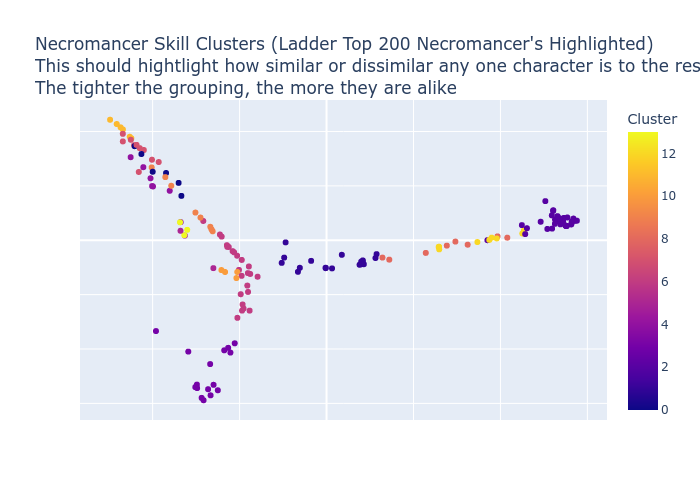

Teeth 2.17% (1.0)
Necromancer Hardcore Skill Distribution
Popular builds include:
48.94% of Necromancer's invest heavily in Hemorrhage, Iron Maiden, Life Tap, Weaken, Dim Vision
18.09% of Necromancer's invest heavily in Summon Mastery, Raise Skeleton Warrior, Raise Skeletal Mage, Fire Golem, Revive
13.83% of Necromancer's invest heavily in Corpse Explosion, Fire Golem, Summon Mastery, Convocation, Raise Skeletal Mage
11.70% of Necromancer's invest heavily in Bone Spear, Bone Spirit, Teeth, Bone Wall, Convocation
7.45% of Necromancer's invest heavily in Desecrate, Poison Nova, Deadly Poison, Convocation, Corpse Explosion
48.94% of Necromancer's Main Skills:
 Hemorrhage 100.00% (920)
Hemorrhage 100.00% (920)
 Iron Maiden 100.00% (908)
Iron Maiden 100.00% (908)
 Life Tap 100.00% (869)
Life Tap 100.00% (869)
 Weaken 100.00% (856)
Weaken 100.00% (856)
 Dim Vision 56.52% (149)
Dim Vision 56.52% (149)
Other common skills in this group:
Teeth 2.17% (1.0)
Armor:
Skin of the Vipermagi 31.25% (10)
Enigma 12.50% (4)
Bone 12.50% (4)
Skullder's Ire 6.25% (2)
Smoke 6.25% (2)
Helmet:
Harlequin Crest 34.38% (11)
Lore 28.12% (9)
Peasant Crown 6.25% (2)
Accursed Circlet 3.12% (1)
Shadow Cowl 3.12% (1)
Ring:
Raven Frost 6.35% (4)
Nagelring 6.35% (4)
The Stone of Jordan 3.17% (2)
Bul-Kathos' Wedding Band 3.17% (2)
Wraithra Grasp 3.17% (2)
Amulet:
Accursed Amulet 34.38% (11)
Amulet of Luck 6.25% (2)
Wraithra Gorget 3.12% (1)
Accursed Amulet of Accuracy 3.12% (1)
Accursed Amulet of the Squid 3.12% (1)
Gloves:
Trang-Oul's Claws 75.00% (24)
Chain Gloves of Fortune 6.25% (2)
Viper Hold 3.12% (1)
Magefist 3.12% (1)
Coral Chain Gloves of Thawing 3.12% (1)
Boots:
Aldur's Advance 15.62% (5)
Natalya's Soul 15.62% (5)
War Traveler 9.38% (3)
Silkweave 6.25% (2)
Waterwalk 3.12% (1)
Belt:
Arachnid Mesh 15.62% (5)
Trang-Oul's Girth 6.25% (2)
Tal Rasha's Fine-Spun Cloth 6.25% (2)
Credendum 6.25% (2)
String of Ears 6.25% (2)
Left hand:
Accursed Bone Wand 9.26% (5)
Call to Arms 7.41% (4)
Spirit 7.41% (4)
Edge 5.56% (3)
Wand 5.56% (3)
Offhand:
Homunculus 22.92% (11)
Rhyme 10.42% (5)
Ancients' Pledge 8.33% (4)
Medusa's Gaze 6.25% (3)
Boneflame 6.25% (3)
Skin of the Vipermagi 31.25% (10)
Enigma 12.50% (4)
Bone 12.50% (4)
Skullder's Ire 6.25% (2)
Smoke 6.25% (2)
Helmet:
Harlequin Crest 34.38% (11)
Lore 28.12% (9)
Peasant Crown 6.25% (2)
Accursed Circlet 3.12% (1)
Shadow Cowl 3.12% (1)
Ring:
Raven Frost 6.35% (4)
Nagelring 6.35% (4)
The Stone of Jordan 3.17% (2)
Bul-Kathos' Wedding Band 3.17% (2)
Wraithra Grasp 3.17% (2)
Amulet:
Accursed Amulet 34.38% (11)
Amulet of Luck 6.25% (2)
Wraithra Gorget 3.12% (1)
Accursed Amulet of Accuracy 3.12% (1)
Accursed Amulet of the Squid 3.12% (1)
Gloves:
Trang-Oul's Claws 75.00% (24)
Chain Gloves of Fortune 6.25% (2)
Viper Hold 3.12% (1)
Magefist 3.12% (1)
Coral Chain Gloves of Thawing 3.12% (1)
Boots:
Aldur's Advance 15.62% (5)
Natalya's Soul 15.62% (5)
War Traveler 9.38% (3)
Silkweave 6.25% (2)
Waterwalk 3.12% (1)
Belt:
Arachnid Mesh 15.62% (5)
Trang-Oul's Girth 6.25% (2)
Tal Rasha's Fine-Spun Cloth 6.25% (2)
Credendum 6.25% (2)
String of Ears 6.25% (2)
Left hand:
Accursed Bone Wand 9.26% (5)
Call to Arms 7.41% (4)
Spirit 7.41% (4)
Edge 5.56% (3)
Wand 5.56% (3)
Offhand:
Homunculus 22.92% (11)
Rhyme 10.42% (5)
Ancients' Pledge 8.33% (4)
Medusa's Gaze 6.25% (3)
Boneflame 6.25% (3)
Armor: Skin of the Vipermagi 31.25%, Enigma 12.50%, Bone 12.50%, Skullder's Ire 6.25%, Smoke 6.25%, The Spirit Shroud 6.25%, Naj's Light Plate 3.12%, Que-Hegan's Wisdom 3.12%, Trang-Oul's Scales 3.12%, Duriel's Shell 3.12%, Wyrmhide 3.12%, Heavenly Garb 3.12%, Artificer's Ring Mail 3.12%, Ring Mail 3.12%
Helmet: Harlequin Crest 34.38%, Lore 28.12%, Peasant Crown 6.25%, Accursed Circlet 3.12%, Shadow Cowl 3.12%, Trang-Oul's Guise 3.12%, Bone Casque 3.12%, Tarnhelm 3.12%, Accursed Circlet of Atlas 3.12%, Dread Visage 3.12%, Chromatic Circlet of Atlas 3.12%, Sazabi's Mental Sheath 3.12%, Tal Rasha's Horadric Crest 3.12%
Ring: Raven Frost 6.35%, Nagelring 6.35%, The Stone of Jordan 3.17%, Bul-Kathos' Wedding Band 3.17%, Wraithra Grasp 3.17%, Manald Heal 3.17%, Ring of the Apprentice 3.17%, Shadow Finger 3.17%, Havoc Master 1.59%, Dread Grip 1.59%, Death Master 1.59%, Raven Hold 1.59%, Shadow Touch 1.59%, Blood Master 1.59%, Dwarf Star 1.59%, Grim Hold 1.59%, Grim Spiral 1.59%, Wraithra Whorl 1.59%, Bitter Eye 1.59%, Eagle Grip 1.59%, GhoulRI Hold 1.59%, Havoc Whorl 1.59%, Coral Ring of Fortune 1.59%, Storm Band 1.59%, Dread Coil 1.59%, Viper Whorl 1.59%, Wraithra Eye 1.59%, GhoulRI Eye 1.59%, Grim Coil 1.59%, Bitter Gyre 1.59%, Skull Circle 1.59%, Rune Gyre 1.59%, Viper Knot 1.59%, Corruption Whorl 1.59%, Grim Master 1.59%, Beast Gyre 1.59%, Dread Band 1.59%, Doom Loop 1.59%, Entropy Knot 1.59%, Blood Circle 1.59%, Eagle Whorl 1.59%, Garnet Ring of Thawing 1.59%, Doom Spiral 1.59%, Bahamut's Ring of the Wolf 1.59%, Scintillating Ring of Thawing 1.59%, Corruption Coil 1.59%, Death Whorl 1.59%, Viper Spiral 1.59%, Rune Coil 1.59%, Ring of Fortune 1.59%, Lapis Ring of Fortune 1.59%
Amulet: Accursed Amulet 34.38%, Amulet of Luck 6.25%, Wraithra Gorget 3.12%, Accursed Amulet of Accuracy 3.12%, Accursed Amulet of the Squid 3.12%, Necromancer's Amulet 3.12%, Grim Scarab 3.12%, Accursed Amulet of the Ox 3.12%, Blighting Amulet 3.12%, Shadow Clasp 3.12%, Blighting Amulet of Thawing 3.12%, Accursed Amulet of Bone Spirit 3.12%, Accursed Amulet of Chance 3.12%, PlagueRI Talisman 3.12%, Chromatic Amulet of the Titan 3.12%, Accursed Amulet of the Whale 3.12%, Rainbow Amulet of Health 3.12%, Skull Noose 3.12%, Doom Wing 3.12%, Nokozan Relic 3.12%, Accursed Amulet of Skill 3.12%
Gloves: Trang-Oul's Claws 75.00%, Chain Gloves of Fortune 6.25%, Viper Hold 3.12%, Magefist 3.12%, Coral Chain Gloves of Thawing 3.12%, Cruel Fist 3.12%, Bone Hold 3.12%, Bloodfist 3.12%
Boots: Aldur's Advance 15.62%, Natalya's Soul 15.62%, War Traveler 9.38%, Silkweave 6.25%, Waterwalk 3.12%, Soul Slippers 3.12%, Shadow Blazer 3.12%, Fiendra Brogues 3.12%, Marrowwalk 3.12%, Sander's Riprap 3.12%, Tearhaunch 3.12%, Infernostride 3.12%, Dread Spur 3.12%, Spirit Blazer 3.12%, Viper Trample 3.12%, Havoc Tread 3.12%, Dire Brogues 3.12%, Dire Stalker 3.12%, Dread Track 3.12%, Fiendra Slippers 3.12%, Chain Boots of Luck 3.12%
Belt: Arachnid Mesh 15.62%, Trang-Oul's Girth 6.25%, Tal Rasha's Fine-Spun Cloth 6.25%, Credendum 6.25%, String of Ears 6.25%, Arctic Binding 6.25%, Dire Chain 3.12%, Raven Cord 3.12%, Eagle Chain 3.12%, Wraithra Harness 3.12%, Eagle Clasp 3.12%, Corpse Strap 3.12%, Corpse Winding 3.12%, Storm Winding 3.12%, Thundergod's Vigor 3.12%, Brimstone Lock 3.12%, M'avina's Tenet 3.12%, Viper Lock 3.12%, Gale Lash 3.12%, Coral Plated Belt of the Mammoth 3.12%, Dire Strap 3.12%, Bladebuckle 3.12%, Storm Cord 3.12%
Left hand: Accursed Bone Wand 9.26%, Call to Arms 7.41%, Spirit 7.41%, Edge 5.56%, Wand 5.56%, Necromancer's Bone Wand 3.70%, White 3.70%, Battle Staff of Teleportation 3.70%, Accursed Bone Wand of Chain Lightning 1.85%, Heart of the Oak 1.85%, Accursed Bone Wand of Bone Spear 1.85%, Necromancer's Grim Wand of Wizardry 1.85%, Accursed Bone Wand of Firebolts 1.85%, Golemlord's Bone Wand 1.85%, Accursed Bone Wand of Regeneration 1.85%, Accursed Grim Wand 1.85%, Necromancer's Grim Wand of Weaken 1.85%, Skull Collector 1.85%, Necromancer's Bone Wand of the Locust 1.85%, Blighting Bone Wand 1.85%, Bone Wand of Control 1.85%, Spineripper 1.85%, Gravenspine 1.85%, Venomous Bone Wand of Leadership 1.85%, Necromancer's Bone Wand of Chain Lightning 1.85%, Golemlord's Grim Wand 1.85%, Accursed Yew Wand 1.85%, Snowflake Bone Wand 1.85%, Tangerine Wand of the Leech 1.85%, War Staff of Teleportation 1.85%, Javelin 1.85%, Wand of Energy 1.85%, Accursed Bone Wand of the Apprentice 1.85%, Blackhand Key 1.85%, Flail 1.85%, Amber Yew Wand of Brilliance 1.85%, Wand of the Apprentice 1.85%
Offhand: Homunculus 22.92%, Rhyme 10.42%, Ancients' Pledge 8.33%, Medusa's Gaze 6.25%, Boneflame 6.25%, Preserved Head 6.25%, The Ward 4.17%, Spirit 4.17%, Unraveller Head 4.17%, Sigon's Guard 2.08%, Trang-Oul's Wing 2.08%, Bramble Badge 2.08%, Gale Badge 2.08%, Darkforce Spawn 2.08%, Glyph Badge 2.08%, Hailstone Shield 2.08%, Shadow Shield 2.08%, Mummified Trophy of Bone Spirit 2.08%, Buckler 2.08%, Large Shield 2.08%, Stone Tower 2.08%, Kite Shield 2.08%
Helmet: Harlequin Crest 34.38%, Lore 28.12%, Peasant Crown 6.25%, Accursed Circlet 3.12%, Shadow Cowl 3.12%, Trang-Oul's Guise 3.12%, Bone Casque 3.12%, Tarnhelm 3.12%, Accursed Circlet of Atlas 3.12%, Dread Visage 3.12%, Chromatic Circlet of Atlas 3.12%, Sazabi's Mental Sheath 3.12%, Tal Rasha's Horadric Crest 3.12%
Ring: Raven Frost 6.35%, Nagelring 6.35%, The Stone of Jordan 3.17%, Bul-Kathos' Wedding Band 3.17%, Wraithra Grasp 3.17%, Manald Heal 3.17%, Ring of the Apprentice 3.17%, Shadow Finger 3.17%, Havoc Master 1.59%, Dread Grip 1.59%, Death Master 1.59%, Raven Hold 1.59%, Shadow Touch 1.59%, Blood Master 1.59%, Dwarf Star 1.59%, Grim Hold 1.59%, Grim Spiral 1.59%, Wraithra Whorl 1.59%, Bitter Eye 1.59%, Eagle Grip 1.59%, GhoulRI Hold 1.59%, Havoc Whorl 1.59%, Coral Ring of Fortune 1.59%, Storm Band 1.59%, Dread Coil 1.59%, Viper Whorl 1.59%, Wraithra Eye 1.59%, GhoulRI Eye 1.59%, Grim Coil 1.59%, Bitter Gyre 1.59%, Skull Circle 1.59%, Rune Gyre 1.59%, Viper Knot 1.59%, Corruption Whorl 1.59%, Grim Master 1.59%, Beast Gyre 1.59%, Dread Band 1.59%, Doom Loop 1.59%, Entropy Knot 1.59%, Blood Circle 1.59%, Eagle Whorl 1.59%, Garnet Ring of Thawing 1.59%, Doom Spiral 1.59%, Bahamut's Ring of the Wolf 1.59%, Scintillating Ring of Thawing 1.59%, Corruption Coil 1.59%, Death Whorl 1.59%, Viper Spiral 1.59%, Rune Coil 1.59%, Ring of Fortune 1.59%, Lapis Ring of Fortune 1.59%
Amulet: Accursed Amulet 34.38%, Amulet of Luck 6.25%, Wraithra Gorget 3.12%, Accursed Amulet of Accuracy 3.12%, Accursed Amulet of the Squid 3.12%, Necromancer's Amulet 3.12%, Grim Scarab 3.12%, Accursed Amulet of the Ox 3.12%, Blighting Amulet 3.12%, Shadow Clasp 3.12%, Blighting Amulet of Thawing 3.12%, Accursed Amulet of Bone Spirit 3.12%, Accursed Amulet of Chance 3.12%, PlagueRI Talisman 3.12%, Chromatic Amulet of the Titan 3.12%, Accursed Amulet of the Whale 3.12%, Rainbow Amulet of Health 3.12%, Skull Noose 3.12%, Doom Wing 3.12%, Nokozan Relic 3.12%, Accursed Amulet of Skill 3.12%
Gloves: Trang-Oul's Claws 75.00%, Chain Gloves of Fortune 6.25%, Viper Hold 3.12%, Magefist 3.12%, Coral Chain Gloves of Thawing 3.12%, Cruel Fist 3.12%, Bone Hold 3.12%, Bloodfist 3.12%
Boots: Aldur's Advance 15.62%, Natalya's Soul 15.62%, War Traveler 9.38%, Silkweave 6.25%, Waterwalk 3.12%, Soul Slippers 3.12%, Shadow Blazer 3.12%, Fiendra Brogues 3.12%, Marrowwalk 3.12%, Sander's Riprap 3.12%, Tearhaunch 3.12%, Infernostride 3.12%, Dread Spur 3.12%, Spirit Blazer 3.12%, Viper Trample 3.12%, Havoc Tread 3.12%, Dire Brogues 3.12%, Dire Stalker 3.12%, Dread Track 3.12%, Fiendra Slippers 3.12%, Chain Boots of Luck 3.12%
Belt: Arachnid Mesh 15.62%, Trang-Oul's Girth 6.25%, Tal Rasha's Fine-Spun Cloth 6.25%, Credendum 6.25%, String of Ears 6.25%, Arctic Binding 6.25%, Dire Chain 3.12%, Raven Cord 3.12%, Eagle Chain 3.12%, Wraithra Harness 3.12%, Eagle Clasp 3.12%, Corpse Strap 3.12%, Corpse Winding 3.12%, Storm Winding 3.12%, Thundergod's Vigor 3.12%, Brimstone Lock 3.12%, M'avina's Tenet 3.12%, Viper Lock 3.12%, Gale Lash 3.12%, Coral Plated Belt of the Mammoth 3.12%, Dire Strap 3.12%, Bladebuckle 3.12%, Storm Cord 3.12%
Left hand: Accursed Bone Wand 9.26%, Call to Arms 7.41%, Spirit 7.41%, Edge 5.56%, Wand 5.56%, Necromancer's Bone Wand 3.70%, White 3.70%, Battle Staff of Teleportation 3.70%, Accursed Bone Wand of Chain Lightning 1.85%, Heart of the Oak 1.85%, Accursed Bone Wand of Bone Spear 1.85%, Necromancer's Grim Wand of Wizardry 1.85%, Accursed Bone Wand of Firebolts 1.85%, Golemlord's Bone Wand 1.85%, Accursed Bone Wand of Regeneration 1.85%, Accursed Grim Wand 1.85%, Necromancer's Grim Wand of Weaken 1.85%, Skull Collector 1.85%, Necromancer's Bone Wand of the Locust 1.85%, Blighting Bone Wand 1.85%, Bone Wand of Control 1.85%, Spineripper 1.85%, Gravenspine 1.85%, Venomous Bone Wand of Leadership 1.85%, Necromancer's Bone Wand of Chain Lightning 1.85%, Golemlord's Grim Wand 1.85%, Accursed Yew Wand 1.85%, Snowflake Bone Wand 1.85%, Tangerine Wand of the Leech 1.85%, War Staff of Teleportation 1.85%, Javelin 1.85%, Wand of Energy 1.85%, Accursed Bone Wand of the Apprentice 1.85%, Blackhand Key 1.85%, Flail 1.85%, Amber Yew Wand of Brilliance 1.85%, Wand of the Apprentice 1.85%
Offhand: Homunculus 22.92%, Rhyme 10.42%, Ancients' Pledge 8.33%, Medusa's Gaze 6.25%, Boneflame 6.25%, Preserved Head 6.25%, The Ward 4.17%, Spirit 4.17%, Unraveller Head 4.17%, Sigon's Guard 2.08%, Trang-Oul's Wing 2.08%, Bramble Badge 2.08%, Gale Badge 2.08%, Darkforce Spawn 2.08%, Glyph Badge 2.08%, Hailstone Shield 2.08%, Shadow Shield 2.08%, Mummified Trophy of Bone Spirit 2.08%, Buckler 2.08%, Large Shield 2.08%, Stone Tower 2.08%, Kite Shield 2.08%
Skills: Weaken:20, Iron Maiden:20, Life Tap:20, Hemorrhage:20, Dim Vision:18, Summon Mastery:2, Decrepify:1, Bone Armor:1, Clay Golem:1, Blood Golem:1
Equipment:
Mercenary: Act 2 Desert Mercenary - Fortitude, Andariel's Visage, Doom
Skills: Dim Vision:20, Weaken:20, Iron Maiden:20, Life Tap:20, Hemorrhage:20, Bone Armor:2, Decrepify:1, Summon Mastery:1, Clay Golem:1, Blood Golem:1
Equipment: Armor: Enigma, Helmet: Harlequin Crest, ring: The Stone of Jordan, ring: Raven Frost, Amulet: Accursed Amulet, Gloves: Trang-Oul's Claws, Boots: Silkweave, Belt: Arachnid Mesh, Left hand: Call to Arms, Left hand: Necromancer's Bone Wand, Offhand: Medusa's Gaze, Offhand: Homunculus
Mercenary: Act 2 Desert Mercenary - Steel Shade, Treachery, Doom
Skills: Weaken:20, Iron Maiden:20, Life Tap:20, Hemorrhage:20, Revive:15, Amplify Damage:1, Dim Vision:1, Decrepify:1, Lower Resist:1, Bone Armor:1, Corpse Explosion:1, Bone Wall:1, Summon Mastery:1, Raise Skeleton Warrior:1, Clay Golem:1, Raise Skeletal Mage:1
Equipment: Armor: Enigma, Belt: Arachnid Mesh, Helmet: Harlequin Crest, Gloves: Trang-Oul's Claws, ring: Raven Frost, ring: Havoc Master, Amulet: Wraithra Gorget, Boots: Aldur's Advance, Left hand: Spirit, Left hand: Accursed Bone Wand of Chain Lightning, Offhand: Medusa's Gaze, Offhand: Homunculus
Mercenary: Act 2 Desert Mercenary - Crown of Ages, Guardian Angel, Insight
Skills: Weaken:20, Iron Maiden:20, Life Tap:20, Hemorrhage:20, Dim Vision:8, Bone Wall:5, Decrepify:1, Bone Armor:1, Deadly Poison:1, Corpse Explosion:1, Desecrate:1, Summon Mastery:1, Raise Skeleton Warrior:1, Clay Golem:1, Raise Skeletal Mage:1, Blood Golem:1, Revive:1
Equipment: ring: Bul-Kathos' Wedding Band, ring: Dread Grip, Helmet: Harlequin Crest, Gloves: Trang-Oul's Claws, Belt: Arachnid Mesh, Boots: Waterwalk, Amulet: Accursed Amulet of Accuracy, Armor: Enigma, Left hand: Heart of the Oak, Offhand: Homunculus
Mercenary: Act 2 Desert Mercenary - Leviathan, Vampire Gaze, Insight
Skills: Weaken:20, Life Tap:20, Hemorrhage:20, Bone Armor:20, Iron Maiden:19, Summon Mastery:1, Clay Golem:1, Convocation:1, Blood Golem:1
Equipment:
Mercenary: Act 2 Desert Mercenary - No equipment
Skills: Weaken:20, Iron Maiden:20, Life Tap:20, Hemorrhage:20, Dim Vision:18, Bone Armor:1, Summon Mastery:1, Clay Golem:1, Convocation:1
Equipment: Gloves: Trang-Oul's Claws, Helmet: Harlequin Crest, ring: Wraithra Grasp, ring: The Stone of Jordan, Belt: Arachnid Mesh, Amulet: Accursed Amulet of the Squid, Armor: Skin of the Vipermagi, Boots: War Traveler, Left hand: Call to Arms, Left hand: Accursed Bone Wand of Bone Spear, Offhand: The Ward, Offhand: Homunculus
Mercenary: Act 2 Desert Mercenary - Treachery, Tal Rasha's Horadric Crest, Insight
Skills: Weaken:20, Iron Maiden:20, Life Tap:20, Hemorrhage:20, Convocation:12, Decrepify:1, Bone Armor:1, Corpse Explosion:1, Summon Mastery:1, Raise Skeleton Warrior:1, Clay Golem:1, Raise Skeletal Mage:1, Blood Golem:1, Revive:1
Equipment: ring: Death Master, ring: Raven Hold, Belt: Dire Chain, Helmet: Harlequin Crest, Boots: Soul Slippers, Armor: Skin of the Vipermagi, Gloves: Trang-Oul's Claws, Amulet: Necromancer's Amulet, Left hand: Necromancer's Grim Wand of Wizardry, Offhand: Boneflame
Mercenary: Act 2 Desert Mercenary - Smoke, Andariel's Visage, Insight
Skills: Weaken:20, Iron Maiden:20, Life Tap:20, Hemorrhage:20, Dim Vision:8, Revive:2, Decrepify:1, Bone Armor:1, Deadly Poison:1, Desecrate:1, Summon Mastery:1, Raise Skeleton Warrior:1, Clay Golem:1, Convocation:1, Raise Skeletal Mage:1, Blood Golem:1
Equipment: ring: Shadow Touch, ring: Blood Master, Amulet: Accursed Amulet, Belt: Raven Cord, Gloves: Trang-Oul's Claws, Helmet: Harlequin Crest, Boots: Natalya's Soul, Armor: Naj's Light Plate, Left hand: Edge, Left hand: Accursed Bone Wand, Offhand: Spirit
Mercenary: Act 2 Desert Mercenary - Duriel's Shell, Tal Rasha's Horadric Crest, Insight
Skills: Weaken:20, Iron Maiden:20, Life Tap:20, Hemorrhage:20, Dim Vision:13, Decrepify:1, Bone Armor:1, Summon Mastery:1, Clay Golem:1, Convocation:1, Blood Golem:1
Equipment:
Mercenary: Act 2 Desert Mercenary - Darksight Helm, Leviathan, Insight
Skills: Weaken:20, Iron Maiden:20, Life Tap:20, Hemorrhage:20, Dim Vision:12, Lower Resist:1, Summon Mastery:1, Raise Skeleton Warrior:1, Clay Golem:1, Convocation:1, Raise Skeletal Mage:1, Blood Golem:1, Revive:1
Equipment:
Mercenary: Act 2 Desert Mercenary - Haemosu's Adamant, Stealskull, Insight
Skills: Weaken:20, Iron Maiden:20, Life Tap:20, Hemorrhage:20, Bone Armor:9, Dim Vision:4, Summon Mastery:2, Decrepify:1, Corpse Explosion:1, Clay Golem:1, Convocation:1
Equipment: Belt: Trang-Oul's Girth, Boots: Natalya's Soul, Gloves: Trang-Oul's Claws, Armor: Bone, ring: Raven Frost, ring: Dwarf Star, Amulet: Grim Scarab, Helmet: Accursed Circlet, Left hand: Call to Arms, Left hand: Accursed Bone Wand of Firebolts, Offhand: Sigon's Guard, Offhand: Boneflame
Mercenary: Act 2 Desert Mercenary - Corpsemourn, Vampire Gaze, Insight
Skills: Weaken:20, Iron Maiden:20, Life Tap:20, Hemorrhage:20, Convocation:16, Dim Vision:1, Bone Armor:1
Equipment:
Mercenary: Act 2 Desert Mercenary - Treachery, Tal Rasha's Horadric Crest, Insight
Skills: Weaken:20, Iron Maiden:20, Life Tap:20, Hemorrhage:20, Dim Vision:12, Decrepify:1, Clay Golem:1, Convocation:1, Blood Golem:1, Iron Golem:1, Fire Golem:1
Equipment: Belt: Tal Rasha's Fine-Spun Cloth, ring: Nagelring, ring: Grim Hold, Gloves: Trang-Oul's Claws, Amulet: Accursed Amulet, Boots: Shadow Blazer, Helmet: Shadow Cowl, Armor: Bone, Left hand: Golemlord's Bone Wand, Left hand: Accursed Bone Wand of Regeneration, Offhand: Rhyme, Offhand: Homunculus
Mercenary: Act 2 Desert Mercenary - Tal Rasha's Horadric Crest, Darkglow, Insight
Skills: Weaken:20, Iron Maiden:20, Life Tap:20, Hemorrhage:20, Convocation:14, Decrepify:1, Summon Mastery:1, Clay Golem:1, Blood Golem:1
Equipment: ring: Wraithra Grasp, ring: Grim Spiral, Amulet: Accursed Amulet, Belt: Eagle Chain, Boots: Fiendra Brogues, Gloves: Trang-Oul's Claws, Armor: Que-Hegan's Wisdom, Helmet: Harlequin Crest, Left hand: Edge, Left hand: Accursed Grim Wand, Offhand: Rhyme
Mercenary: Act 2 Desert Mercenary - Leviathan, Tal Rasha's Horadric Crest, Insight
Skills: Weaken:20, Iron Maiden:20, Life Tap:20, Hemorrhage:20, Convocation:8, Revive:3, Amplify Damage:1, Dim Vision:1, Decrepify:1, Lower Resist:1, Bone Armor:1, Raise Skeleton Warrior:1, Raise Skeletal Mage:1
Equipment: ring: Wraithra Whorl, ring: Bul-Kathos' Wedding Band, Amulet: Accursed Amulet, Gloves: Trang-Oul's Claws, Helmet: Harlequin Crest, Boots: Aldur's Advance, Armor: Enigma, Belt: Arachnid Mesh, Left hand: Call to Arms, Left hand: Accursed Bone Wand, Offhand: Medusa's Gaze, Offhand: Homunculus
Mercenary: Act 2 Desert Mercenary - Duriel's Shell, Wormskull, Insight
Skills: Weaken:20, Iron Maiden:20, Life Tap:20, Hemorrhage:20, Blood Golem:9, Summon Mastery:6, Dim Vision:1, Clay Golem:1, Iron Golem:1
Equipment: ring: Manald Heal, ring: Bitter Eye, Amulet: Accursed Amulet of the Ox, Belt: Trang-Oul's Girth, Boots: Marrowwalk, Helmet: Trang-Oul's Guise, Armor: Trang-Oul's Scales, Gloves: Trang-Oul's Claws, Left hand: Necromancer's Grim Wand of Weaken, Offhand: Trang-Oul's Wing
Mercenary: Act 2 Desert Mercenary - Bulwark, Treachery, Insight
Skills: Weaken:20, Iron Maiden:20, Life Tap:20, Hemorrhage:20, Dim Vision:1, Decrepify:1, Bone Armor:1
Equipment:
Mercenary: Act 2 Desert Mercenary - No equipment
Skills: Weaken:20, Iron Maiden:20, Life Tap:20, Hemorrhage:20, Bone Armor:5, Convocation:3, Amplify Damage:1, Dim Vision:1, Summon Mastery:1, Raise Skeleton Warrior:1, Clay Golem:1, Raise Skeletal Mage:1, Blood Golem:1, Revive:1
Equipment: ring: Eagle Grip, ring: GhoulRI Hold, Boots: War Traveler, Gloves: Trang-Oul's Claws, Belt: Credendum, Helmet: Harlequin Crest, Armor: Skin of the Vipermagi, Amulet: Accursed Amulet, Left hand: Accursed Bone Wand, Offhand: Spirit
Mercenary: Act 2 Desert Mercenary - Crown of Thieves, Lionheart, Insight
Skills: Weaken:20, Iron Maiden:20, Life Tap:20, Hemorrhage:20, Summon Mastery:10, Dim Vision:2, Decrepify:1, Clay Golem:1, Convocation:1, Blood Golem:1
Equipment: Amulet: Accursed Amulet, Left hand: Skull Collector, Left hand: Necromancer's Bone Wand of the Locust, Gloves: Trang-Oul's Claws, ring: Havoc Whorl, ring: Coral Ring of Fortune, Helmet: Peasant Crown, Belt: Wraithra Harness, Armor: Skullder's Ire, Boots: Aldur's Advance, Offhand: Homunculus
Mercenary: Act 2 Desert Mercenary - Toothrow, Natalya's Totem, Insight
Skills: Weaken:20, Iron Maiden:20, Life Tap:20, Hemorrhage:20, Revive:4, Decrepify:1, Summon Mastery:1, Raise Skeleton Warrior:1, Clay Golem:1, Convocation:1, Raise Skeletal Mage:1, Blood Golem:1
Equipment: Gloves: Trang-Oul's Claws, Armor: Bone, Helmet: Bone Casque, Amulet: Blighting Amulet, ring: Storm Band, ring: Dread Coil, Belt: Eagle Clasp, Boots: Sander's Riprap, Left hand: White, Left hand: Blighting Bone Wand, Offhand: Homunculus
Mercenary: Act 2 Desert Mercenary - Stealth, Mask, Insight
Skills: Weaken:20, Iron Maiden:20, Life Tap:20, Hemorrhage:20, Summon Mastery:1, Raise Skeleton Warrior:1, Clay Golem:1, Raise Skeletal Mage:1, Blood Golem:1, Iron Golem:1, Fire Golem:1, Revive:1
Equipment: Boots: Tearhaunch, Gloves: Trang-Oul's Claws, Belt: Corpse Strap, Armor: Duriel's Shell, ring: Viper Whorl, ring: Manald Heal, Helmet: Tarnhelm, Left hand: Battle Staff of Teleportation, Left hand: Bone Wand of Control, Amulet: Shadow Clasp, Offhand: Preserved Head
Mercenary: Act 2 Desert Mercenary - Corpsemourn, Crown of Thieves, Insight
Skills: Weaken:20, Iron Maiden:20, Life Tap:20, Hemorrhage:20, Revive:6, Amplify Damage:1, Bone Armor:1, Corpse Explosion:1, Bone Wall:1, Raise Skeleton Warrior:1, Clay Golem:1, Convocation:1, Raise Skeletal Mage:1, Blood Golem:1
Equipment: Gloves: Trang-Oul's Claws, Boots: War Traveler, Armor: Skin of the Vipermagi, Helmet: Harlequin Crest, ring: Wraithra Eye, ring: GhoulRI Eye, Belt: Credendum, Amulet: Blighting Amulet of Thawing, Left hand: Spineripper, Left hand: Gravenspine, Offhand: Bramble Badge, Offhand: Gale Badge
Mercenary: Act 1 Rogue Scout - Vampire Gaze, Skin of the Vipermagi, Windforce
Skills: Weaken:20, Iron Maiden:20, Life Tap:20, Hemorrhage:20, Summon Mastery:6, Dim Vision:1, Decrepify:1, Lower Resist:1, Clay Golem:1, Convocation:1, Blood Golem:1
Equipment: Belt: Corpse Winding, Gloves: Trang-Oul's Claws, Armor: Skin of the Vipermagi, Boots: Natalya's Soul, ring: Ring of the Apprentice x2, Amulet: Accursed Amulet of Bone Spirit, Helmet: Lore, Left hand: Venomous Bone Wand of Leadership, Left hand: Necromancer's Bone Wand of Chain Lightning, Offhand: Preserved Head, Offhand: Homunculus
Mercenary: Act 1 Rogue Scout - Rockfleece, Tal Rasha's Horadric Crest, Harmony
Skills: Weaken:20, Iron Maiden:20, Life Tap:20, Hemorrhage:20, Dim Vision:5, Decrepify:1, Summon Mastery:1, Raise Skeleton Warrior:1, Clay Golem:1, Convocation:1, Raise Skeletal Mage:1, Blood Golem:1, Revive:1
Equipment: ring: Grim Coil, ring: Bitter Gyre, Helmet: Lore, Amulet: Accursed Amulet, Armor: Smoke, Boots: Infernostride, Gloves: Trang-Oul's Claws, Belt: Storm Winding, Left hand: Edge, Left hand: Accursed Bone Wand, Offhand: Rhyme
Mercenary: Act 1 Rogue Scout - No equipment
Skills: Weaken:20, Iron Maiden:20, Life Tap:20, Hemorrhage:20, Dim Vision:9, Amplify Damage:1, Bone Armor:1, Convocation:1
Equipment: ring: Skull Circle, ring: Raven Frost, Gloves: Trang-Oul's Claws, Amulet: Accursed Amulet of Chance, Belt: String of Ears, Boots: Aldur's Advance, Helmet: Accursed Circlet of Atlas, Left hand: Golemlord's Grim Wand, Left hand: Necromancer's Bone Wand, Offhand: Darkforce Spawn, Offhand: Boneflame, Armor: Skin of the Vipermagi
Mercenary: Act 2 Desert Mercenary - No equipment
Skills: Weaken:20, Iron Maiden:20, Life Tap:20, Hemorrhage:20, Revive:4, Decrepify:1, Raise Skeleton Warrior:1, Clay Golem:1, Convocation:1, Raise Skeletal Mage:1
Equipment:
Mercenary: Act 2 Desert Mercenary - Light Plate of the Whale, Natalya's Totem, Doom Stinger
Skills: Weaken:20, Iron Maiden:20, Life Tap:20, Hemorrhage:20, Revive:4, Decrepify:1, Summon Mastery:1, Raise Skeleton Warrior:1, Clay Golem:1, Convocation:1, Raise Skeletal Mage:1, Blood Golem:1
Equipment: ring: Rune Gyre, ring: Viper Knot, Helmet: Lore, Gloves: Viper Hold, Amulet: PlagueRI Talisman, Armor: Bone, Belt: Tal Rasha's Fine-Spun Cloth, Boots: Dread Spur, Left hand: Accursed Yew Wand, Offhand: Glyph Badge
Mercenary: Act 2 Desert Mercenary - Duskdeep, The Centurion, Insight
Skills: Weaken:20, Iron Maiden:20, Life Tap:20, Hemorrhage:20, Dim Vision:2, Decrepify:1, Summon Mastery:1, Raise Skeleton Warrior:1, Clay Golem:1, Convocation:1, Raise Skeletal Mage:1, Blood Golem:1, Revive:1
Equipment: Armor: The Spirit Shroud, Belt: Thundergod's Vigor, Helmet: Lore, Amulet: Chromatic Amulet of the Titan, Gloves: Trang-Oul's Claws, ring: Corruption Whorl, ring: Grim Master, Boots: Spirit Blazer, Left hand: Snowflake Bone Wand, Left hand: Wand, Offhand: Hailstone Shield, Offhand: Unraveller Head
Mercenary: Act 2 Desert Mercenary - Soul Coat, Tal Rasha's Horadric Crest, Insight
Skills: Weaken:20, Iron Maiden:20, Life Tap:20, Hemorrhage:20, Summon Mastery:2, Bone Armor:1, Raise Skeleton Warrior:1, Clay Golem:1, Convocation:1, Raise Skeletal Mage:1, Blood Golem:1, Revive:1
Equipment: Gloves: Trang-Oul's Claws, Helmet: Lore, Boots: Viper Trample, Belt: Brimstone Lock, ring: Beast Gyre, ring: Dread Band, Armor: Skin of the Vipermagi, Amulet: Accursed Amulet, Left hand: Tangerine Wand of the Leech, Left hand: Spirit, Offhand: Shadow Shield, Offhand: Mummified Trophy of Bone Spirit
Mercenary: Act 2 Desert Mercenary - Goldskin, Death Mask, Insight
Skills: Iron Maiden:20, Life Tap:20, Hemorrhage:20, Weaken:15, Amplify Damage:1, Decrepify:1, Bone Armor:1, Corpse Explosion:1, Summon Mastery:1, Raise Skeleton Warrior:1, Clay Golem:1, Convocation:1, Raise Skeletal Mage:1, Blood Golem:1, Revive:1
Equipment:
Mercenary: Act 2 Desert Mercenary - Treachery, Gale Veil, Insight
Skills: Weaken:20, Iron Maiden:20, Life Tap:20, Hemorrhage:20, Decrepify:1, Bone Armor:1, Summon Mastery:1, Clay Golem:1, Convocation:1
Equipment: ring: Doom Loop, ring: Shadow Finger, Gloves: Trang-Oul's Claws, Belt: M'avina's Tenet, Amulet: Accursed Amulet, Helmet: Lore, Armor: Wyrmhide, Boots: Aldur's Advance, Left hand: Spirit, Offhand: Ancients' Pledge
Mercenary: Act 2 Desert Mercenary - Corpse Brow, Full Plate Mail, Insight
Skills: Weaken:20, Iron Maiden:20, Life Tap:20, Hemorrhage:20, Summon Mastery:1, Clay Golem:1, Convocation:1, Blood Golem:1
Equipment:
Mercenary: Act 3 Eastern Sorceror - No equipment
Skills: Weaken:20, Iron Maiden:20, Life Tap:20, Hemorrhage:20, Bone Armor:2, Decrepify:1
Equipment: Gloves: Magefist, ring: Entropy Knot, ring: Blood Circle, Armor: Heavenly Garb, Belt: Arctic Binding, Helmet: Dread Visage, Amulet: Accursed Amulet of the Whale, Boots: Havoc Tread, Left hand: War Staff of Teleportation, Left hand: White, Offhand: Rhyme
Mercenary: Act 2 Desert Mercenary - Stealth, Death Casque, Insight
Skills: Weaken:20, Iron Maiden:20, Hemorrhage:20, Life Tap:18, Decrepify:1, Bone Armor:1, Corpse Explosion:1, Summon Mastery:1, Clay Golem:1, Convocation:1, Blood Golem:1
Equipment:
Mercenary: Act 2 Desert Mercenary - No equipment
Skills: Weaken:20, Iron Maiden:20, Life Tap:20, Hemorrhage:20, Convocation:1
Equipment: Left hand: Javelin, Left hand: Spirit, Offhand: Buckler, Offhand: Ancients' Pledge, Amulet: Rainbow Amulet of Health, Armor: Artificer's Ring Mail, Gloves: Coral Chain Gloves of Thawing, Boots: Natalya's Soul, Helmet: Chromatic Circlet of Atlas, ring: Eagle Whorl, ring: Garnet Ring of Thawing, Belt: Viper Lock
Mercenary: Act 1 Rogue Scout - Glowing Ring Mail of Balance, Sturdy Skull Cap of the Mind, Short Bow
Skills: Iron Maiden:20, Life Tap:20, Hemorrhage:20, Weaken:15, Decrepify:1, Clay Golem:1, Convocation:1, Blood Golem:1
Equipment: Armor: Ring Mail, ring: Shadow Finger, ring: Nagelring, Helmet: Lore, Amulet: Amulet of Luck, Boots: Dire Brogues, Offhand: Rhyme, Offhand: Ancients' Pledge, Gloves: Cruel Fist, Belt: Gale Lash, Left hand: Wand of Energy
Mercenary: Act 2 Desert Mercenary - PlagueRI Jack, Blood Visage, Loath Gutter
Skills: Weaken:20, Iron Maiden:20, Life Tap:20, Hemorrhage:20, Decrepify:1, Bone Armor:1
Equipment: Belt: Arctic Binding, Gloves: Bone Hold, Armor: Smoke, Boots: Dire Stalker, ring: Doom Spiral, Amulet: Accursed Amulet, Helmet: Lore, Left hand: Battle Staff of Teleportation, Left hand: Accursed Bone Wand of the Apprentice, Offhand: Ancients' Pledge
Mercenary: Act 2 Desert Mercenary - Hwanin's Splendor, Insight
Skills: Weaken:20, Life Tap:20, Hemorrhage:20, Iron Maiden:11, Decrepify:1, Lower Resist:1, Bone Armor:1, Summon Mastery:1, Clay Golem:1, Convocation:1, Blood Golem:1, Iron Golem:1, Fire Golem:1
Equipment: Boots: Dread Track, Gloves: Chain Gloves of Fortune, ring: Bahamut's Ring of the Wolf, ring: Scintillating Ring of Thawing, Helmet: Sazabi's Mental Sheath, Belt: Coral Plated Belt of the Mammoth, Amulet: Skull Noose, Armor: Skullder's Ire, Left hand: Accursed Bone Wand, Offhand: The Ward
Mercenary: Act 2 Desert Mercenary - Hawkmail, Duskdeep, Insight
Skills: Iron Maiden:20, Life Tap:20, Hemorrhage:20, Weaken:7, Dim Vision:6, Decrepify:1, Bone Armor:1, Clay Golem:1, Convocation:1, Blood Golem:1
Equipment:
Mercenary: Act 2 Desert Mercenary - Bramble Mantle, Holocaust Crest, Kelpie Snare
Skills: Life Tap:20, Hemorrhage:20, Iron Maiden:19, Weaken:17, Dim Vision:1
Equipment: ring: Corruption Coil, ring: Death Whorl, Offhand: Large Shield, Offhand: Stone Tower, Gloves: Trang-Oul's Claws, Amulet: Doom Wing, Belt: Dire Strap, Helmet: Tal Rasha's Horadric Crest, Armor: The Spirit Shroud, Boots: Fiendra Slippers, Left hand: Blackhand Key
Mercenary: Act 2 Desert Mercenary - Prismatic Coronet of Enlightenment, Stealth, Insight
Skills: Weaken:20, Iron Maiden:20, Hemorrhage:20, Life Tap:9, Decrepify:1
Equipment:
Mercenary: Act 2 Desert Mercenary - No equipment
Skills: Iron Maiden:20, Life Tap:20, Hemorrhage:20, Weaken:9, Dim Vision:1, Decrepify:1, Lower Resist:1, Summon Mastery:1, Clay Golem:1, Convocation:1, Blood Golem:1
Equipment: Belt: Bladebuckle, ring: Viper Spiral, ring: Rune Coil, Helmet: Lore, Gloves: Bloodfist, Armor: Skin of the Vipermagi, Left hand: Flail, Left hand: Amber Yew Wand of Brilliance, Offhand: Kite Shield, Offhand: Homunculus, Boots: Silkweave, Amulet: Nokozan Relic
Mercenary: Act 3 Eastern Sorceror - Undead Crown, Venom Ward, Stone Mar, Ancients' Pledge
Skills: Weaken:20, Iron Maiden:20, Hemorrhage:20, Life Tap:3, Dim Vision:1, Decrepify:1, Teeth:1, Deadly Poison:1, Desecrate:1, Raise Skeleton Warrior:1, Clay Golem:1, Convocation:1, Raise Skeletal Mage:1, Blood Golem:1, Revive:1
Equipment:
Mercenary: Act 1 Rogue Scout - Hawkmail, Darksight Helm, Insight
Skills: Iron Maiden:20, Hemorrhage:20, Life Tap:16, Weaken:5, Dim Vision:1, Decrepify:1, Lower Resist:1, Bone Armor:1, Convocation:1
Equipment: ring: Nagelring x2, Belt: String of Ears, Armor: Skin of the Vipermagi, Gloves: Trang-Oul's Claws, Boots: Natalya's Soul, Amulet: Accursed Amulet of Skill, Helmet: Harlequin Crest, Left hand: Wand of the Apprentice, Offhand: Homunculus
Mercenary: Act 3 Eastern Sorceror - No equipment
Skills: Iron Maiden:20, Life Tap:20, Hemorrhage:20, Weaken:8, Raise Skeleton Warrior:1, Convocation:1, Raise Skeletal Mage:1, Revive:1
Equipment: Amulet: Amulet of Luck, Boots: Chain Boots of Luck, Gloves: Chain Gloves of Fortune, ring: Ring of Fortune, ring: Lapis Ring of Fortune, Belt: Storm Cord, Helmet: Peasant Crown, Armor: Skin of the Vipermagi, Left hand: Wand x2, Offhand: Unraveller Head, Offhand: Preserved Head
Mercenary: Act 2 Desert Mercenary - Grim Suit, Stone Visor, Insight
Skills: Weaken:20, Iron Maiden:20, Hemorrhage:20, Life Tap:4, Dim Vision:1, Bone Armor:1
Equipment:
Mercenary: Act 1 Rogue Scout - No equipment
18.09% of Necromancer's Main Skills:
 Summon Mastery 100.00% (340)
Summon Mastery 100.00% (340)
 Raise Skeleton Warrior 100.00% (320)
Raise Skeleton Warrior 100.00% (320)
 Raise Skeletal Mage 94.12% (315)
Raise Skeletal Mage 94.12% (315)
 Fire Golem 52.94% (123)
Fire Golem 52.94% (123)
 Revive 58.82% (68)
Revive 58.82% (68)
Other common skills in this group:
Teeth 5.88% (1.0)
Amulet:
GhoulRI Beads 8.33% (1)
Golemlord's Amulet of the Squid 8.33% (1)
Necromancer's Amulet 8.33% (1)
Golemlord's Amulet of Luck 8.33% (1)
Amulet of Luck 8.33% (1)
Boots:
Aldur's Advance 16.67% (2)
Pain Spur 8.33% (1)
Silkweave 8.33% (1)
Dread Blazer 8.33% (1)
Cruel Brogues 8.33% (1)
Ring:
Viper Spiral 8.33% (2)
Nagelring 8.33% (2)
Dwarf Star 8.33% (2)
Entropy Hold 4.17% (1)
Death Spiral 4.17% (1)
Left hand:
Spirit 21.05% (4)
Call to Arms 10.53% (2)
Arm of King Leoric 10.53% (2)
Golemlord's Grim Wand of Leadership 5.26% (1)
Heart of the Oak 5.26% (1)
Offhand:
Spirit 15.79% (3)
Ancients' Pledge 15.79% (3)
Moser's Blessed Circle 10.53% (2)
Rhyme 10.53% (2)
Homunculus 5.26% (1)
Armor:
Trang-Oul's Scales 25.00% (3)
Skin of the Vipermagi 16.67% (2)
Bone 16.67% (2)
Smoke 8.33% (1)
Carrion Shroud 8.33% (1)
Belt:
Verdungo's Hearty Cord 16.67% (2)
Trang-Oul's Girth 16.67% (2)
Goldwrap 8.33% (1)
Immortal King's Detail 8.33% (1)
Nightsmoke 8.33% (1)
Gloves:
Chance Guards 25.00% (3)
Trang-Oul's Claws 25.00% (3)
Pain Knuckle 8.33% (1)
Grim Fist 8.33% (1)
Raven Grasp 8.33% (1)
Helmet:
Undead Crown 41.67% (5)
Peasant Crown 16.67% (2)
Harlequin Crest 8.33% (1)
Golemlord's Circlet 8.33% (1)
Full Helm 8.33% (1)
GhoulRI Beads 8.33% (1)
Golemlord's Amulet of the Squid 8.33% (1)
Necromancer's Amulet 8.33% (1)
Golemlord's Amulet of Luck 8.33% (1)
Amulet of Luck 8.33% (1)
Boots:
Aldur's Advance 16.67% (2)
Pain Spur 8.33% (1)
Silkweave 8.33% (1)
Dread Blazer 8.33% (1)
Cruel Brogues 8.33% (1)
Ring:
Viper Spiral 8.33% (2)
Nagelring 8.33% (2)
Dwarf Star 8.33% (2)
Entropy Hold 4.17% (1)
Death Spiral 4.17% (1)
Left hand:
Spirit 21.05% (4)
Call to Arms 10.53% (2)
Arm of King Leoric 10.53% (2)
Golemlord's Grim Wand of Leadership 5.26% (1)
Heart of the Oak 5.26% (1)
Offhand:
Spirit 15.79% (3)
Ancients' Pledge 15.79% (3)
Moser's Blessed Circle 10.53% (2)
Rhyme 10.53% (2)
Homunculus 5.26% (1)
Armor:
Trang-Oul's Scales 25.00% (3)
Skin of the Vipermagi 16.67% (2)
Bone 16.67% (2)
Smoke 8.33% (1)
Carrion Shroud 8.33% (1)
Belt:
Verdungo's Hearty Cord 16.67% (2)
Trang-Oul's Girth 16.67% (2)
Goldwrap 8.33% (1)
Immortal King's Detail 8.33% (1)
Nightsmoke 8.33% (1)
Gloves:
Chance Guards 25.00% (3)
Trang-Oul's Claws 25.00% (3)
Pain Knuckle 8.33% (1)
Grim Fist 8.33% (1)
Raven Grasp 8.33% (1)
Helmet:
Undead Crown 41.67% (5)
Peasant Crown 16.67% (2)
Harlequin Crest 8.33% (1)
Golemlord's Circlet 8.33% (1)
Full Helm 8.33% (1)
Amulet: GhoulRI Beads 8.33%, Golemlord's Amulet of the Squid 8.33%, Necromancer's Amulet 8.33%, Golemlord's Amulet of Luck 8.33%, Amulet of Luck 8.33%, Golemlord's Amulet 8.33%, The Eye of Etlich 8.33%, Golemlord's Amulet of Revivification 8.33%, Amulet of Leadership 8.33%, Seraph's Hymn 8.33%, Graverobber's Amulet of the Mind 8.33%, Summoner's Amulet of Fortune 8.33%
Boots: Aldur's Advance 16.67%, Pain Spur 8.33%, Silkweave 8.33%, Dread Blazer 8.33%, Cruel Brogues 8.33%, Marrowwalk 8.33%, PlagueRI Spur 8.33%, Sander's Riprap 8.33%, Bramble Spur 8.33%, Brimstone Track 8.33%, Ocher Light Plated Boots of Fortune 8.33%
Ring: Viper Spiral 8.33%, Nagelring 8.33%, Dwarf Star 8.33%, Entropy Hold 4.17%, Death Spiral 4.17%, Entropy Band 4.17%, Dread Coil 4.17%, Viper Coil 4.17%, Eagle Grasp 4.17%, Wisp Projector 4.17%, Chaos Master 4.17%, Blood Grasp 4.17%, Dread Band 4.17%, Dread Spiral 4.17%, Order Grip 4.17%, Viper Band 4.17%, Garnet Ring of the Sentinel 4.17%, Raven Frost 4.17%, GhoulRI Coil 4.17%, Bone Circle 4.17%, Ring of Fortune 4.17%
Left hand: Spirit 21.05%, Call to Arms 10.53%, Arm of King Leoric 10.53%, Golemlord's Grim Wand of Leadership 5.26%, Heart of the Oak 5.26%, Blade of Ali Baba 5.26%, Necromancer's Bone Wand of Leadership 5.26%, Burnt Wand 5.26%, Carrion Horn 5.26%, Rune Bludgeon 5.26%, Necromancer's Bone Wand of Nova 5.26%, Golemlord's Grim Wand of the Wraith 5.26%, Vodoun Petrified Wand of Leadership 5.26%, Blackhand Key 5.26%
Offhand: Spirit 15.79%, Ancients' Pledge 15.79%, Moser's Blessed Circle 10.53%, Rhyme 10.53%, Homunculus 5.26%, Trang-Oul's Wing 5.26%, Milabrega's Orb 5.26%, Preserved Head 5.26%, Boneflame 5.26%, Large Shield 5.26%, Dread Shell 5.26%, Shadow Ward 5.26%, The Ward 5.26%
Armor: Trang-Oul's Scales 25.00%, Skin of the Vipermagi 16.67%, Bone 16.67%, Smoke 8.33%, Carrion Shroud 8.33%, Goldskin 8.33%, Stealth 8.33%, Breast Plate 8.33%
Belt: Verdungo's Hearty Cord 16.67%, Trang-Oul's Girth 16.67%, Goldwrap 8.33%, Immortal King's Detail 8.33%, Nightsmoke 8.33%, Glyph Lash 8.33%, Pain Fringe 8.33%, M'avina's Tenet 8.33%, Brimstone Chain 8.33%, Fiendra Lash 8.33%
Gloves: Chance Guards 25.00%, Trang-Oul's Claws 25.00%, Pain Knuckle 8.33%, Grim Fist 8.33%, Raven Grasp 8.33%, Fiendra Fist 8.33%, Corpse Grip 8.33%, Sharkskin Gloves of Fortune 8.33%
Helmet: Undead Crown 41.67%, Peasant Crown 16.67%, Harlequin Crest 8.33%, Golemlord's Circlet 8.33%, Full Helm 8.33%, Trang-Oul's Guise 8.33%, Lore 8.33%
Boots: Aldur's Advance 16.67%, Pain Spur 8.33%, Silkweave 8.33%, Dread Blazer 8.33%, Cruel Brogues 8.33%, Marrowwalk 8.33%, PlagueRI Spur 8.33%, Sander's Riprap 8.33%, Bramble Spur 8.33%, Brimstone Track 8.33%, Ocher Light Plated Boots of Fortune 8.33%
Ring: Viper Spiral 8.33%, Nagelring 8.33%, Dwarf Star 8.33%, Entropy Hold 4.17%, Death Spiral 4.17%, Entropy Band 4.17%, Dread Coil 4.17%, Viper Coil 4.17%, Eagle Grasp 4.17%, Wisp Projector 4.17%, Chaos Master 4.17%, Blood Grasp 4.17%, Dread Band 4.17%, Dread Spiral 4.17%, Order Grip 4.17%, Viper Band 4.17%, Garnet Ring of the Sentinel 4.17%, Raven Frost 4.17%, GhoulRI Coil 4.17%, Bone Circle 4.17%, Ring of Fortune 4.17%
Left hand: Spirit 21.05%, Call to Arms 10.53%, Arm of King Leoric 10.53%, Golemlord's Grim Wand of Leadership 5.26%, Heart of the Oak 5.26%, Blade of Ali Baba 5.26%, Necromancer's Bone Wand of Leadership 5.26%, Burnt Wand 5.26%, Carrion Horn 5.26%, Rune Bludgeon 5.26%, Necromancer's Bone Wand of Nova 5.26%, Golemlord's Grim Wand of the Wraith 5.26%, Vodoun Petrified Wand of Leadership 5.26%, Blackhand Key 5.26%
Offhand: Spirit 15.79%, Ancients' Pledge 15.79%, Moser's Blessed Circle 10.53%, Rhyme 10.53%, Homunculus 5.26%, Trang-Oul's Wing 5.26%, Milabrega's Orb 5.26%, Preserved Head 5.26%, Boneflame 5.26%, Large Shield 5.26%, Dread Shell 5.26%, Shadow Ward 5.26%, The Ward 5.26%
Armor: Trang-Oul's Scales 25.00%, Skin of the Vipermagi 16.67%, Bone 16.67%, Smoke 8.33%, Carrion Shroud 8.33%, Goldskin 8.33%, Stealth 8.33%, Breast Plate 8.33%
Belt: Verdungo's Hearty Cord 16.67%, Trang-Oul's Girth 16.67%, Goldwrap 8.33%, Immortal King's Detail 8.33%, Nightsmoke 8.33%, Glyph Lash 8.33%, Pain Fringe 8.33%, M'avina's Tenet 8.33%, Brimstone Chain 8.33%, Fiendra Lash 8.33%
Gloves: Chance Guards 25.00%, Trang-Oul's Claws 25.00%, Pain Knuckle 8.33%, Grim Fist 8.33%, Raven Grasp 8.33%, Fiendra Fist 8.33%, Corpse Grip 8.33%, Sharkskin Gloves of Fortune 8.33%
Helmet: Undead Crown 41.67%, Peasant Crown 16.67%, Harlequin Crest 8.33%, Golemlord's Circlet 8.33%, Full Helm 8.33%, Trang-Oul's Guise 8.33%, Lore 8.33%
Skills: Summon Mastery:20, Raise Skeleton Warrior:20, Raise Skeletal Mage:20, Convocation:19, Desecrate:9, Corpse Explosion:7, Lower Resist:3, Terror:1, Decrepify:1, Bone Armor:1, Deadly Poison:1, Clay Golem:1, Blood Golem:1, Revive:1
Equipment: Amulet: GhoulRI Beads, Boots: Pain Spur, ring: Entropy Hold, ring: Death Spiral, Left hand: Call to Arms, Left hand: Golemlord's Grim Wand of Leadership, Offhand: Moser's Blessed Circle, Offhand: Homunculus, Armor: Skin of the Vipermagi, Belt: Verdungo's Hearty Cord, Gloves: Chance Guards, Helmet: Harlequin Crest
Mercenary: Act 2 Desert Mercenary - Fortitude, Steel Shade, Insight
Skills: Summon Mastery:20, Raise Skeleton Warrior:20, Raise Skeletal Mage:20, Fire Golem:20, Corpse Explosion:10, Lower Resist:2, Amplify Damage:1, Bone Armor:1, Deadly Poison:1, Desecrate:1, Clay Golem:1, Convocation:1, Blood Golem:1, Iron Golem:1, Revive:1
Equipment: Amulet: Golemlord's Amulet of the Squid, ring: Entropy Band, ring: Dread Coil, Armor: Bone, Belt: Verdungo's Hearty Cord, Gloves: Trang-Oul's Claws, Boots: Aldur's Advance, Helmet: Golemlord's Circlet, Left hand: Call to Arms, Left hand: Heart of the Oak, Offhand: Spirit x2
Mercenary: Act 3 Eastern Sorceror - Stealth, Vampire Gaze, The Atlantean, Moser's Blessed Circle
Skills: Summon Mastery:20, Raise Skeleton Warrior:20, Raise Skeletal Mage:20, Revive:20, Desecrate:5, Corpse Explosion:4, Amplify Damage:1, Decrepify:1, Lower Resist:1, Bone Armor:1, Deadly Poison:1, Clay Golem:1, Convocation:1, Blood Golem:1, Flesh Offering:1, Bone Offering:1
Equipment: Gloves: Chance Guards, Boots: Silkweave, Armor: Trang-Oul's Scales, Amulet: Necromancer's Amulet, Belt: Trang-Oul's Girth, ring: Viper Coil, ring: Viper Spiral, Helmet: Undead Crown, Left hand: Arm of King Leoric, Offhand: Trang-Oul's Wing
Mercenary: Act 3 Eastern Sorceror - Trang-Oul's Scales, Stealskull, Hexfire, The Ward
Skills: Summon Mastery:20, Raise Skeleton Warrior:20, Raise Skeletal Mage:20, Convocation:13, Revive:11, Amplify Damage:1, Lower Resist:1, Bone Armor:1, Deadly Poison:1, Corpse Explosion:1, Bone Wall:1, Desecrate:1, Clay Golem:1, Blood Golem:1, Flesh Offering:1, Bone Offering:1, Iron Golem:1, Fire Golem:1
Equipment: ring: Nagelring, ring: Viper Spiral, Gloves: Chance Guards, Helmet: Undead Crown, Armor: Bone, Amulet: Golemlord's Amulet of Luck, Belt: Goldwrap, Boots: Dread Blazer, Left hand: Blade of Ali Baba, Left hand: Necromancer's Bone Wand of Leadership, Offhand: Rhyme, Offhand: Spirit
Mercenary: Act 5 Barbarian - Bitter Visage, Blood Shell, Glyph Scythe
Skills: Corpse Explosion:20, Summon Mastery:20, Raise Skeleton Warrior:20, Raise Skeletal Mage:20, Revive:3, Bone Offering:2, Fire Golem:2, Decrepify:1, Bone Armor:1, Deadly Poison:1, Desecrate:1, Clay Golem:1, Convocation:1, Blood Golem:1, Iron Golem:1
Equipment: Helmet: Full Helm, Boots: Cruel Brogues, ring: Eagle Grasp, ring: Wisp Projector, Gloves: Pain Knuckle, Armor: Trang-Oul's Scales, Belt: Immortal King's Detail, Amulet: Amulet of Luck, Left hand: Burnt Wand, Left hand: Spirit, Offhand: Milabrega's Orb, Offhand: Preserved Head
Mercenary: Act 5 Barbarian - Rockstopper, Duriel's Shell, Brimstone Fang
Skills: Summon Mastery:20, Raise Skeleton Warrior:20, Raise Skeletal Mage:20, Fire Golem:20, Corpse Explosion:5, Amplify Damage:1, Bone Armor:1, Clay Golem:1, Convocation:1, Blood Golem:1, Iron Golem:1
Equipment: ring: Chaos Master, ring: Blood Grasp, Armor: Smoke, Gloves: Trang-Oul's Claws, Helmet: Undead Crown, Belt: Nightsmoke, Amulet: Golemlord's Amulet, Boots: Marrowwalk, Left hand: Carrion Horn, Left hand: Arm of King Leoric, Offhand: Boneflame
Mercenary: Act 5 Barbarian - Haemosu's Adamant, Demon Shell, Cruel Skewer
Skills: Summon Mastery:20, Raise Skeleton Warrior:20, Raise Skeletal Mage:20, Convocation:8, Revive:7, Flesh Offering:6, Blood Golem:2, Amplify Damage:1, Decrepify:1, Bone Armor:1, Deadly Poison:1, Desecrate:1, Clay Golem:1, Iron Golem:1
Equipment: ring: Dread Band, ring: Dread Spiral, Amulet: The Eye of Etlich, Gloves: Trang-Oul's Claws, Belt: Trang-Oul's Girth, Helmet: Trang-Oul's Guise, Boots: PlagueRI Spur, Armor: Trang-Oul's Scales, Offhand: Large Shield, Offhand: Moser's Blessed Circle, Left hand: Spirit
Mercenary: Act 5 Barbarian - Coif of Glory, Fiendra Pelt, Holocaust Skewer
Skills: Summon Mastery:20, Raise Skeleton Warrior:20, Raise Skeletal Mage:20, Fire Golem:20, Convocation:3, Confuse:1, Attract:1, Decrepify:1, Clay Golem:1, Blood Golem:1, Iron Golem:1
Equipment: Belt: Glyph Lash, Helmet: Peasant Crown, Boots: Sander's Riprap, Amulet: Golemlord's Amulet of Revivification, Armor: Carrion Shroud, Offhand: Ancients' Pledge, Offhand: Dread Shell, Gloves: Grim Fist, ring: Order Grip, ring: Viper Band, Left hand: Rune Bludgeon
Mercenary: Act 5 Barbarian - Holocaust Carapace, Skull Cap, Bloodletter
Skills: Summon Mastery:20, Raise Skeleton Warrior:20, Raise Skeletal Mage:20, Bone Offering:17, Amplify Damage:1, Decrepify:1, Lower Resist:1, Bone Armor:1, Deadly Poison:1, Desecrate:1, Clay Golem:1, Convocation:1, Blood Golem:1, Flesh Offering:1, Revive:1
Equipment: Belt: Pain Fringe, ring: Dwarf Star, ring: Garnet Ring of the Sentinel, Amulet: Amulet of Leadership, Helmet: Peasant Crown, Left hand: Necromancer's Bone Wand of Nova, Left hand: Spirit, Offhand: Shadow Ward, Offhand: Ancients' Pledge, Boots: Bramble Spur, Gloves: Raven Grasp, Armor: Goldskin
Mercenary: Act 3 Eastern Sorceror - Storm Mask, Darkglow, Pain Skewer
Skills: Summon Mastery:20, Raise Skeleton Warrior:20, Raise Skeletal Mage:20, Fire Golem:12, Amplify Damage:1, Decrepify:1, Bone Armor:1, Deadly Poison:1, Corpse Explosion:1, Desecrate:1, Clay Golem:1, Convocation:1, Blood Golem:1, Flesh Offering:1, Bone Offering:1, Iron Golem:1
Equipment: Armor: Stealth, Helmet: Lore, Gloves: Fiendra Fist, Boots: Aldur's Advance, ring: Raven Frost, ring: Dwarf Star, Belt: M'avina's Tenet, Amulet: Seraph's Hymn, Left hand: Spirit, Offhand: The Ward
Mercenary: Act 2 Desert Mercenary - Doom Visage, Shaftstop, Insight
Skills: Summon Mastery:20, Raise Skeleton Warrior:20, Fire Golem:20, Raise Skeletal Mage:19, Amplify Damage:1, Lower Resist:1, Clay Golem:1, Convocation:1, Blood Golem:1, Flesh Offering:1, Iron Golem:1
Equipment:
Mercenary: Act 5 Barbarian - Sazabi's Mental Sheath, Hwanin's Refuge, Swordguard
Skills: Summon Mastery:20, Raise Skeletal Mage:20, Revive:20, Blood Golem:16, Bone Armor:3, Deadly Poison:1, Desecrate:1, Raise Skeleton Warrior:1, Clay Golem:1
Equipment:
Mercenary: Act 1 Rogue Scout - No equipment
Skills: Summon Mastery:20, Raise Skeleton Warrior:20, Raise Skeletal Mage:20, Bone Spear:9, Amplify Damage:1, Decrepify:1, Lower Resist:1, Teeth:1, Bone Armor:1, Corpse Explosion:1, Clay Golem:1, Convocation:1, Blood Golem:1, Flesh Offering:1, Bone Offering:1, Revive:1
Equipment:
Mercenary: Act 2 Desert Mercenary - Fiendra Casque, Hawkmail, Insight
Skills: Summon Mastery:20, Raise Skeleton Warrior:20, Raise Skeletal Mage:20, Corpse Explosion:16, Revive:3, Amplify Damage:1, Decrepify:1, Bone Armor:1, Convocation:1
Equipment: Left hand: Golemlord's Grim Wand of the Wraith
Mercenary: Act 5 Barbarian - No equipment
Skills: Summon Mastery:20, Raise Skeleton Warrior:20, Raise Skeletal Mage:20, Fire Golem:11, Amplify Damage:1, Decrepify:1, Bone Armor:1, Deadly Poison:1, Corpse Explosion:1, Desecrate:1, Clay Golem:1, Convocation:1, Blood Golem:1, Iron Golem:1
Equipment:
Mercenary: Act 2 Desert Mercenary - Hailstone Mantle, Corpse Casque, Insight
Skills: Summon Mastery:20, Raise Skeleton Warrior:20, Raise Skeletal Mage:16, Blood Golem:5, Amplify Damage:1, Decrepify:1, Deadly Poison:1, Desecrate:1, Clay Golem:1, Convocation:1, Bone Offering:1
Equipment: ring: Nagelring, ring: GhoulRI Coil, Amulet: Graverobber's Amulet of the Mind, Belt: Brimstone Chain, Helmet: Undead Crown, Boots: Brimstone Track, Armor: Skin of the Vipermagi, Gloves: Corpse Grip, Left hand: Vodoun Petrified Wand of Leadership, Offhand: Ancients' Pledge
Mercenary: Act 2 Desert Mercenary - Skin of the Flayed One, The Tannr Gorerod
Skills: Summon Mastery:20, Raise Skeleton Warrior:20, Fire Golem:18, Decrepify:1, Bone Armor:1, Deadly Poison:1, Corpse Explosion:1, Desecrate:1, Clay Golem:1, Convocation:1, Blood Golem:1, Iron Golem:1
Equipment: Helmet: Undead Crown, Belt: Fiendra Lash, ring: Bone Circle, ring: Ring of Fortune, Boots: Ocher Light Plated Boots of Fortune, Gloves: Sharkskin Gloves of Fortune, Armor: Breast Plate, Amulet: Summoner's Amulet of Fortune, Left hand: Blackhand Key, Offhand: Rhyme
Mercenary: Act 2 Desert Mercenary - Crown, Silks of the Victor, Insight
13.83% of Necromancer's Main Skills:
 Corpse Explosion 92.31% (239)
Corpse Explosion 92.31% (239)
Fire Golem 100.00% (238)
Summon Mastery 100.00% (208)
 Convocation 100.00% (177)
Convocation 100.00% (177)
Raise Skeletal Mage 92.31% (89)
Other common skills in this group:
Teeth 7.69% (1.0)
Gloves:
Trang-Oul's Claws 53.85% (7)
Magefist 23.08% (3)
PlagueRI Hold 7.69% (1)
Fiendra Knuckle 7.69% (1)
Sander's Taboo 7.69% (1)
Amulet:
Mara's Kaleidoscope 15.38% (2)
Eagle Emblem 7.69% (1)
Order Clasp 7.69% (1)
Shadow Scarab 7.69% (1)
Doom Noose 7.69% (1)
Ring:
The Stone of Jordan 15.38% (4)
Dwarf Star 7.69% (2)
Entropy Band 3.85% (1)
Bitter Knot 3.85% (1)
Rune Turn 3.85% (1)
Helmet:
Trang-Oul's Guise 38.46% (5)
Harlequin Crest 30.77% (4)
Lore 23.08% (3)
Golemlord's Circlet of the Colossus 7.69% (1)
Armor:
Trang-Oul's Scales 38.46% (5)
Bone 30.77% (4)
Stealth 23.08% (3)
Smoke 7.69% (1)
Boots:
Silkweave 30.77% (4)
Hsarus' Iron Heel 15.38% (2)
Natalya's Soul 7.69% (1)
Storm Nails 7.69% (1)
Raven Tread 7.69% (1)
Belt:
Trang-Oul's Girth 38.46% (5)
String of Ears 7.69% (1)
Goldwrap 7.69% (1)
Arachnid Mesh 7.69% (1)
Tal Rasha's Fine-Spun Cloth 7.69% (1)
Left hand:
Spirit 22.73% (5)
Heart of the Oak 18.18% (4)
Call to Arms 13.64% (3)
Maelstrom 9.09% (2)
Tomb Wand of Leadership 4.55% (1)
Offhand:
Trang-Oul's Wing 26.32% (5)
Homunculus 26.32% (5)
Medusa's Gaze 15.79% (3)
Radament's Sphere 5.26% (1)
Rune Aegis 5.26% (1)
Trang-Oul's Claws 53.85% (7)
Magefist 23.08% (3)
PlagueRI Hold 7.69% (1)
Fiendra Knuckle 7.69% (1)
Sander's Taboo 7.69% (1)
Amulet:
Mara's Kaleidoscope 15.38% (2)
Eagle Emblem 7.69% (1)
Order Clasp 7.69% (1)
Shadow Scarab 7.69% (1)
Doom Noose 7.69% (1)
Ring:
The Stone of Jordan 15.38% (4)
Dwarf Star 7.69% (2)
Entropy Band 3.85% (1)
Bitter Knot 3.85% (1)
Rune Turn 3.85% (1)
Helmet:
Trang-Oul's Guise 38.46% (5)
Harlequin Crest 30.77% (4)
Lore 23.08% (3)
Golemlord's Circlet of the Colossus 7.69% (1)
Armor:
Trang-Oul's Scales 38.46% (5)
Bone 30.77% (4)
Stealth 23.08% (3)
Smoke 7.69% (1)
Boots:
Silkweave 30.77% (4)
Hsarus' Iron Heel 15.38% (2)
Natalya's Soul 7.69% (1)
Storm Nails 7.69% (1)
Raven Tread 7.69% (1)
Belt:
Trang-Oul's Girth 38.46% (5)
String of Ears 7.69% (1)
Goldwrap 7.69% (1)
Arachnid Mesh 7.69% (1)
Tal Rasha's Fine-Spun Cloth 7.69% (1)
Left hand:
Spirit 22.73% (5)
Heart of the Oak 18.18% (4)
Call to Arms 13.64% (3)
Maelstrom 9.09% (2)
Tomb Wand of Leadership 4.55% (1)
Offhand:
Trang-Oul's Wing 26.32% (5)
Homunculus 26.32% (5)
Medusa's Gaze 15.79% (3)
Radament's Sphere 5.26% (1)
Rune Aegis 5.26% (1)
Gloves: Trang-Oul's Claws 53.85%, Magefist 23.08%, PlagueRI Hold 7.69%, Fiendra Knuckle 7.69%, Sander's Taboo 7.69%
Amulet: Mara's Kaleidoscope 15.38%, Eagle Emblem 7.69%, Order Clasp 7.69%, Shadow Scarab 7.69%, Doom Noose 7.69%, Stone Scarab 7.69%, Venomous Amulet of Health 7.69%, Summoner's Amulet 7.69%, Golemlord's Amulet of Craftmanship 7.69%, Havoc Noose 7.69%, Noxious Amulet of the Apprentice 7.69%, Havoc Scarab 7.69%
Ring: The Stone of Jordan 15.38%, Dwarf Star 7.69%, Entropy Band 3.85%, Bitter Knot 3.85%, Rune Turn 3.85%, Viper Loop 3.85%, Grim Hold 3.85%, Skull Hold 3.85%, Rune Finger 3.85%, GhoulRI Gyre 3.85%, Havoc Grasp 3.85%, Great Wyrm's Ring of the Apprentice 3.85%, Rune Coil 3.85%, Stone Master 3.85%, Death Loop 3.85%, Crimson Ring of the Apprentice 3.85%, Raven Whorl 3.85%, GhoulRI Coil 3.85%, Grim Turn 3.85%, Stone Band 3.85%, Corruption Spiral 3.85%, Blood Whorl 3.85%
Helmet: Trang-Oul's Guise 38.46%, Harlequin Crest 30.77%, Lore 23.08%, Golemlord's Circlet of the Colossus 7.69%
Armor: Trang-Oul's Scales 38.46%, Bone 30.77%, Stealth 23.08%, Smoke 7.69%
Boots: Silkweave 30.77%, Hsarus' Iron Heel 15.38%, Natalya's Soul 7.69%, Storm Nails 7.69%, Raven Tread 7.69%, Aldur's Advance 7.69%, Corpse Slippers 7.69%, Tancred's Hobnails 7.69%, Marrowwalk 7.69%
Belt: Trang-Oul's Girth 38.46%, String of Ears 7.69%, Goldwrap 7.69%, Arachnid Mesh 7.69%, Tal Rasha's Fine-Spun Cloth 7.69%, Storm Buckle 7.69%, Nightsmoke 7.69%, Imp Buckle 7.69%, Hsarus' Iron Stay 7.69%
Left hand: Spirit 22.73%, Heart of the Oak 18.18%, Call to Arms 13.64%, Maelstrom 9.09%, Tomb Wand of Leadership 4.55%, Hellplague 4.55%, White 4.55%, Battle Staff of Teleportation 4.55%, Necromancer's Yew Wand 4.55%, Golemlord's Grim Wand of Regeneration 4.55%, Arm of King Leoric 4.55%, Ember Grim Wand 4.55%
Offhand: Trang-Oul's Wing 26.32%, Homunculus 26.32%, Medusa's Gaze 15.79%, Radament's Sphere 5.26%, Rune Aegis 5.26%, Rhyme 5.26%, Cleglaw's Claw 5.26%, Lidless Wall 5.26%, Blessed Hierophant Trophy of Blocking 5.26%
Amulet: Mara's Kaleidoscope 15.38%, Eagle Emblem 7.69%, Order Clasp 7.69%, Shadow Scarab 7.69%, Doom Noose 7.69%, Stone Scarab 7.69%, Venomous Amulet of Health 7.69%, Summoner's Amulet 7.69%, Golemlord's Amulet of Craftmanship 7.69%, Havoc Noose 7.69%, Noxious Amulet of the Apprentice 7.69%, Havoc Scarab 7.69%
Ring: The Stone of Jordan 15.38%, Dwarf Star 7.69%, Entropy Band 3.85%, Bitter Knot 3.85%, Rune Turn 3.85%, Viper Loop 3.85%, Grim Hold 3.85%, Skull Hold 3.85%, Rune Finger 3.85%, GhoulRI Gyre 3.85%, Havoc Grasp 3.85%, Great Wyrm's Ring of the Apprentice 3.85%, Rune Coil 3.85%, Stone Master 3.85%, Death Loop 3.85%, Crimson Ring of the Apprentice 3.85%, Raven Whorl 3.85%, GhoulRI Coil 3.85%, Grim Turn 3.85%, Stone Band 3.85%, Corruption Spiral 3.85%, Blood Whorl 3.85%
Helmet: Trang-Oul's Guise 38.46%, Harlequin Crest 30.77%, Lore 23.08%, Golemlord's Circlet of the Colossus 7.69%
Armor: Trang-Oul's Scales 38.46%, Bone 30.77%, Stealth 23.08%, Smoke 7.69%
Boots: Silkweave 30.77%, Hsarus' Iron Heel 15.38%, Natalya's Soul 7.69%, Storm Nails 7.69%, Raven Tread 7.69%, Aldur's Advance 7.69%, Corpse Slippers 7.69%, Tancred's Hobnails 7.69%, Marrowwalk 7.69%
Belt: Trang-Oul's Girth 38.46%, String of Ears 7.69%, Goldwrap 7.69%, Arachnid Mesh 7.69%, Tal Rasha's Fine-Spun Cloth 7.69%, Storm Buckle 7.69%, Nightsmoke 7.69%, Imp Buckle 7.69%, Hsarus' Iron Stay 7.69%
Left hand: Spirit 22.73%, Heart of the Oak 18.18%, Call to Arms 13.64%, Maelstrom 9.09%, Tomb Wand of Leadership 4.55%, Hellplague 4.55%, White 4.55%, Battle Staff of Teleportation 4.55%, Necromancer's Yew Wand 4.55%, Golemlord's Grim Wand of Regeneration 4.55%, Arm of King Leoric 4.55%, Ember Grim Wand 4.55%
Offhand: Trang-Oul's Wing 26.32%, Homunculus 26.32%, Medusa's Gaze 15.79%, Radament's Sphere 5.26%, Rune Aegis 5.26%, Rhyme 5.26%, Cleglaw's Claw 5.26%, Lidless Wall 5.26%, Blessed Hierophant Trophy of Blocking 5.26%
Skills: Corpse Explosion:20, Desecrate:20, Convocation:20, Fire Golem:20, Decrepify:10, Lower Resist:7, Bone Armor:1, Deadly Poison:1, Poison Nova:1, Summon Mastery:1, Raise Skeleton Warrior:1, Clay Golem:1, Raise Skeletal Mage:1, Blood Golem:1, Iron Golem:1, Revive:1
Equipment: Gloves: Trang-Oul's Claws, Amulet: Eagle Emblem, ring: Entropy Band, ring: Bitter Knot, Helmet: Trang-Oul's Guise, Armor: Trang-Oul's Scales, Boots: Silkweave, Belt: Trang-Oul's Girth, Left hand: Call to Arms, Left hand: Heart of the Oak, Offhand: Medusa's Gaze, Offhand: Trang-Oul's Wing
Mercenary: Act 1 Rogue Scout - Treachery, The Face of Horror, Harmony
Skills: Corpse Explosion:20, Summon Mastery:20, Raise Skeletal Mage:20, Fire Golem:20, Lower Resist:10, Flesh Offering:3, Decrepify:2, Bone Armor:1, Raise Skeleton Warrior:1, Clay Golem:1, Convocation:1, Blood Golem:1, Iron Golem:1
Equipment: Boots: Natalya's Soul, Gloves: Trang-Oul's Claws, Amulet: Order Clasp, Left hand: Spirit, Left hand: Tomb Wand of Leadership, Offhand: Radament's Sphere, Offhand: Rune Aegis, ring: Rune Turn, ring: Viper Loop, Armor: Bone, Helmet: Harlequin Crest, Belt: String of Ears
Mercenary: Act 2 Desert Mercenary - Andariel's Visage, Treachery, Insight
Skills: Corpse Explosion:20, Summon Mastery:20, Raise Skeleton Warrior:20, Convocation:20, Fire Golem:8, Lower Resist:5, Decrepify:1, Bone Armor:1, Deadly Poison:1, Desecrate:1, Clay Golem:1, Raise Skeletal Mage:1, Blood Golem:1, Iron Golem:1
Equipment: Armor: Stealth, Boots: Storm Nails, ring: Grim Hold, ring: Skull Hold, Belt: Goldwrap, Helmet: Harlequin Crest, Gloves: PlagueRI Hold, Amulet: Shadow Scarab, Left hand: Spirit, Offhand: Homunculus
Mercenary: Act 2 Desert Mercenary - Treachery, Hwanin's Splendor, Insight
Skills: Corpse Explosion:20, Summon Mastery:20, Convocation:20, Fire Golem:20, Lower Resist:7, Decrepify:3, Bone Armor:1, Deadly Poison:1, Bone Wall:1, Desecrate:1, Poison Nova:1, Raise Skeleton Warrior:1, Clay Golem:1, Raise Skeletal Mage:1, Blood Golem:1, Iron Golem:1, Revive:1
Equipment: Gloves: Trang-Oul's Claws, Boots: Raven Tread, Amulet: Doom Noose, ring: Rune Finger, ring: GhoulRI Gyre, Helmet: Trang-Oul's Guise, Armor: Trang-Oul's Scales, Belt: Trang-Oul's Girth, Left hand: Maelstrom, Left hand: Hellplague, Offhand: Trang-Oul's Wing
Mercenary: Act 2 Desert Mercenary - Kira's Guardian, Treachery, Insight
Skills: Corpse Explosion:20, Convocation:20, Fire Golem:20, Bone Wall:14, Bone Armor:8, Summon Mastery:5, Decrepify:1, Lower Resist:1, Deadly Poison:1, Desecrate:1, Raise Skeleton Warrior:1, Clay Golem:1, Raise Skeletal Mage:1, Blood Golem:1, Iron Golem:1, Revive:1
Equipment: ring: Havoc Grasp, ring: Great Wyrm's Ring of the Apprentice, Boots: Silkweave, Amulet: Mara's Kaleidoscope, Belt: Trang-Oul's Girth, Gloves: Trang-Oul's Claws, Armor: Trang-Oul's Scales, Helmet: Trang-Oul's Guise, Left hand: Call to Arms, Left hand: Heart of the Oak, Offhand: Medusa's Gaze, Offhand: Trang-Oul's Wing
Mercenary: Act 2 Desert Mercenary - Treachery, Steel Shade, Infinity
Skills: Corpse Explosion:20, Summon Mastery:20, Raise Skeletal Mage:20, Fire Golem:20, Convocation:9, Decrepify:1, Lower Resist:1, Bone Armor:1, Deadly Poison:1, Desecrate:1, Raise Skeleton Warrior:1, Clay Golem:1, Blood Golem:1, Iron Golem:1, Revive:1
Equipment: Gloves: Trang-Oul's Claws, Belt: Arachnid Mesh, Boots: Silkweave, Helmet: Harlequin Crest, ring: The Stone of Jordan x2, Amulet: Mara's Kaleidoscope, Armor: Bone, Left hand: Call to Arms, Left hand: Heart of the Oak, Offhand: Medusa's Gaze, Offhand: Homunculus
Mercenary: Act 3 Eastern Sorceror - Ormus' Robes, Nightwing's Veil, Plague, Gerke's Sanctuary
Skills: Corpse Explosion:20, Summon Mastery:20, Convocation:20, Fire Golem:20, Bone Wall:8, Lower Resist:1, Bone Armor:1, Deadly Poison:1, Desecrate:1, Clay Golem:1, Blood Golem:1, Iron Golem:1
Equipment: Armor: Bone, Helmet: Harlequin Crest, ring: Rune Coil, ring: Stone Master, Gloves: Magefist, Amulet: Stone Scarab, Belt: Tal Rasha's Fine-Spun Cloth, Boots: Silkweave, Left hand: Heart of the Oak, Offhand: Homunculus
Mercenary: Act 2 Desert Mercenary - Shaftstop, Steel Shade, Insight
Skills: Corpse Explosion:20, Summon Mastery:20, Convocation:20, Fire Golem:20, Lower Resist:3, Revive:2, Decrepify:1, Bone Armor:1, Deadly Poison:1, Bone Wall:1, Desecrate:1, Raise Skeleton Warrior:1, Clay Golem:1, Raise Skeletal Mage:1, Blood Golem:1, Iron Golem:1
Equipment: Amulet: Venomous Amulet of Health, ring: Dwarf Star, ring: Death Loop, Gloves: Trang-Oul's Claws, Belt: Trang-Oul's Girth, Armor: Trang-Oul's Scales, Helmet: Trang-Oul's Guise, Boots: Aldur's Advance, Left hand: White, Offhand: Trang-Oul's Wing
Mercenary: Act 2 Desert Mercenary - Tal Rasha's Horadric Crest, Fortitude, Insight
Skills: Corpse Explosion:20, Summon Mastery:20, Fire Golem:20, Convocation:15, Amplify Damage:1, Decrepify:1, Lower Resist:1, Teeth:1, Bone Armor:1, Deadly Poison:1, Bone Wall:1, Desecrate:1, Bone Spear:1, Bone Spirit:1, Raise Skeleton Warrior:1, Clay Golem:1, Raise Skeletal Mage:1, Blood Golem:1, Iron Golem:1, Revive:1
Equipment: Armor: Stealth, ring: Crimson Ring of the Apprentice, ring: Raven Whorl, Gloves: Fiendra Knuckle, Boots: Corpse Slippers, Belt: Storm Buckle, Helmet: Lore, Left hand: Battle Staff of Teleportation, Left hand: Spirit, Amulet: Summoner's Amulet, Offhand: Rhyme
Mercenary: Act 2 Desert Mercenary - Duskdeep, Sazabi's Ghost Liberator, Insight
Skills: Summon Mastery:20, Raise Skeletal Mage:20, Fire Golem:20, Convocation:19, Raise Skeleton Warrior:3, Revive:2, Confuse:1, Lower Resist:1, Clay Golem:1, Blood Golem:1, Flesh Offering:1, Iron Golem:1
Equipment: Belt: Nightsmoke, Helmet: Golemlord's Circlet of the Colossus, Armor: Bone, Gloves: Magefist, ring: The Stone of Jordan x2, Amulet: Golemlord's Amulet of Craftmanship, Boots: Tancred's Hobnails, Left hand: Necromancer's Yew Wand, Left hand: Golemlord's Grim Wand of Regeneration, Offhand: Homunculus
Mercenary: Act 3 Eastern Sorceror - Rockstopper
Skills: Corpse Explosion:20, Raise Skeleton Warrior:20, Fire Golem:15, Summon Mastery:13, Convocation:7, Raise Skeletal Mage:2, Amplify Damage:1, Decrepify:1, Lower Resist:1, Bone Armor:1, Deadly Poison:1, Desecrate:1, Poison Nova:1, Clay Golem:1, Blood Golem:1, Flesh Offering:1, Bone Offering:1, Iron Golem:1, Revive:1
Equipment: ring: GhoulRI Coil, ring: Dwarf Star, Amulet: Havoc Noose, Gloves: Trang-Oul's Claws, Belt: Trang-Oul's Girth, Boots: Marrowwalk, Helmet: Trang-Oul's Guise, Armor: Trang-Oul's Scales, Left hand: Maelstrom, Left hand: Arm of King Leoric, Offhand: Cleglaw's Claw, Offhand: Trang-Oul's Wing
Mercenary: Act 2 Desert Mercenary - Guardian Angel, Steel Shade, Insight
Skills: Corpse Explosion:20, Raise Skeletal Mage:20, Fire Golem:15, Summon Mastery:12, Desecrate:7, Convocation:6, Decrepify:1, Lower Resist:1, Bone Armor:1, Deadly Poison:1, Raise Skeleton Warrior:1, Clay Golem:1, Blood Golem:1, Iron Golem:1
Equipment: ring: Grim Turn, ring: Stone Band, Belt: Imp Buckle, Helmet: Lore, Gloves: Magefist, Amulet: Noxious Amulet of the Apprentice, Armor: Smoke, Boots: Hsarus' Iron Heel, Left hand: Spirit, Offhand: Lidless Wall
Mercenary: Act 2 Desert Mercenary - Tal Rasha's Horadric Crest, Naj's Light Plate, Insight
Skills: Corpse Explosion:20, Fire Golem:20, Summon Mastery:17, Lower Resist:1, Bone Armor:1, Deadly Poison:1, Desecrate:1, Raise Skeleton Warrior:1, Clay Golem:1, Convocation:1, Raise Skeletal Mage:1, Blood Golem:1, Iron Golem:1, Revive:1
Equipment: Armor: Stealth, ring: Corruption Spiral, ring: Blood Whorl, Boots: Hsarus' Iron Heel, Amulet: Havoc Scarab, Belt: Hsarus' Iron Stay, Gloves: Sander's Taboo, Helmet: Lore, Left hand: Ember Grim Wand, Left hand: Spirit, Offhand: Blessed Hierophant Trophy of Blocking, Offhand: Homunculus
Mercenary: Act 5 Barbarian - Bitter Mantle, Great Helm, Crainte Vomir
11.70% of Necromancer's Main Skills:
 Bone Spear 100.00% (220)
Bone Spear 100.00% (220)
 Bone Spirit 100.00% (220)
Bone Spirit 100.00% (220)
Teeth 100.00% (201)
 Bone Wall 100.00% (73)
Bone Wall 100.00% (73)
Convocation 90.91% (64)
Other common skills in this group:
Teeth 100.0% (202.0)
Armor:
Stealth 33.33% (2)
Skin of the Vipermagi 33.33% (2)
Bone 16.67% (1)
Duriel's Shell 16.67% (1)
Boots:
Aldur's Advance 33.33% (2)
GhoulRI Slippers 16.67% (1)
Demon Spur 16.67% (1)
Natalya's Soul 16.67% (1)
Doom Nails 16.67% (1)
Amulet:
Venomous Amulet 16.67% (1)
Summoner's Amulet of the Centaur 16.67% (1)
Blood Torc 16.67% (1)
Corruption Torc 16.67% (1)
Saracen's Chance 16.67% (1)
Offhand:
Rhyme 44.44% (4)
Lidless Wall 11.11% (1)
Preserved Head 11.11% (1)
Gerke's Sanctuary 11.11% (1)
Storm Guard 11.11% (1)
Ring:
Beast Hold 8.33% (1)
Death Turn 8.33% (1)
Dread Eye 8.33% (1)
Scintillating Ring 8.33% (1)
Entropy Turn 8.33% (1)
Belt:
Arachnid Mesh 16.67% (1)
Credendum 16.67% (1)
Dire Buckle 16.67% (1)
Bitter Lock 16.67% (1)
Lenymo 16.67% (1)
Gloves:
Trang-Oul's Claws 50.00% (3)
Eagle Grip 16.67% (1)
Raven Touch 16.67% (1)
Magefist 16.67% (1)
Helmet:
Lore 33.33% (2)
Harlequin Crest 16.67% (1)
Tarnhelm 16.67% (1)
Grim Mask 16.67% (1)
Peasant Crown 16.67% (1)
Left hand:
Spirit 40.00% (4)
White 30.00% (3)
Emerald Battle Staff of Teleportation 10.00% (1)
Golemlord's Grim Wand of the Lamprey 10.00% (1)
Bone Wand of the Wraith 10.00% (1)
Stealth 33.33% (2)
Skin of the Vipermagi 33.33% (2)
Bone 16.67% (1)
Duriel's Shell 16.67% (1)
Boots:
Aldur's Advance 33.33% (2)
GhoulRI Slippers 16.67% (1)
Demon Spur 16.67% (1)
Natalya's Soul 16.67% (1)
Doom Nails 16.67% (1)
Amulet:
Venomous Amulet 16.67% (1)
Summoner's Amulet of the Centaur 16.67% (1)
Blood Torc 16.67% (1)
Corruption Torc 16.67% (1)
Saracen's Chance 16.67% (1)
Offhand:
Rhyme 44.44% (4)
Lidless Wall 11.11% (1)
Preserved Head 11.11% (1)
Gerke's Sanctuary 11.11% (1)
Storm Guard 11.11% (1)
Ring:
Beast Hold 8.33% (1)
Death Turn 8.33% (1)
Dread Eye 8.33% (1)
Scintillating Ring 8.33% (1)
Entropy Turn 8.33% (1)
Belt:
Arachnid Mesh 16.67% (1)
Credendum 16.67% (1)
Dire Buckle 16.67% (1)
Bitter Lock 16.67% (1)
Lenymo 16.67% (1)
Gloves:
Trang-Oul's Claws 50.00% (3)
Eagle Grip 16.67% (1)
Raven Touch 16.67% (1)
Magefist 16.67% (1)
Helmet:
Lore 33.33% (2)
Harlequin Crest 16.67% (1)
Tarnhelm 16.67% (1)
Grim Mask 16.67% (1)
Peasant Crown 16.67% (1)
Left hand:
Spirit 40.00% (4)
White 30.00% (3)
Emerald Battle Staff of Teleportation 10.00% (1)
Golemlord's Grim Wand of the Lamprey 10.00% (1)
Bone Wand of the Wraith 10.00% (1)
Armor: Stealth 33.33%, Skin of the Vipermagi 33.33%, Bone 16.67%, Duriel's Shell 16.67%
Boots: Aldur's Advance 33.33%, GhoulRI Slippers 16.67%, Demon Spur 16.67%, Natalya's Soul 16.67%, Doom Nails 16.67%
Amulet: Venomous Amulet 16.67%, Summoner's Amulet of the Centaur 16.67%, Blood Torc 16.67%, Corruption Torc 16.67%, Saracen's Chance 16.67%, Venomous Amulet of Regrowth 16.67%
Offhand: Rhyme 44.44%, Lidless Wall 11.11%, Preserved Head 11.11%, Gerke's Sanctuary 11.11%, Storm Guard 11.11%, Homunculus 11.11%
Ring: Beast Hold 8.33%, Death Turn 8.33%, Dread Eye 8.33%, Scintillating Ring 8.33%, Entropy Turn 8.33%, Dread Spiral 8.33%, Stone Touch 8.33%, Russet Ring of the Apprentice 8.33%, Corruption Circle 8.33%, Beast Finger 8.33%, Raven Frost 8.33%, Wyrm's Ring of the Apprentice 8.33%
Belt: Arachnid Mesh 16.67%, Credendum 16.67%, Dire Buckle 16.67%, Bitter Lock 16.67%, Lenymo 16.67%, Nightsmoke 16.67%
Gloves: Trang-Oul's Claws 50.00%, Eagle Grip 16.67%, Raven Touch 16.67%, Magefist 16.67%
Helmet: Lore 33.33%, Harlequin Crest 16.67%, Tarnhelm 16.67%, Grim Mask 16.67%, Peasant Crown 16.67%
Left hand: Spirit 40.00%, White 30.00%, Emerald Battle Staff of Teleportation 10.00%, Golemlord's Grim Wand of the Lamprey 10.00%, Bone Wand of the Wraith 10.00%
Boots: Aldur's Advance 33.33%, GhoulRI Slippers 16.67%, Demon Spur 16.67%, Natalya's Soul 16.67%, Doom Nails 16.67%
Amulet: Venomous Amulet 16.67%, Summoner's Amulet of the Centaur 16.67%, Blood Torc 16.67%, Corruption Torc 16.67%, Saracen's Chance 16.67%, Venomous Amulet of Regrowth 16.67%
Offhand: Rhyme 44.44%, Lidless Wall 11.11%, Preserved Head 11.11%, Gerke's Sanctuary 11.11%, Storm Guard 11.11%, Homunculus 11.11%
Ring: Beast Hold 8.33%, Death Turn 8.33%, Dread Eye 8.33%, Scintillating Ring 8.33%, Entropy Turn 8.33%, Dread Spiral 8.33%, Stone Touch 8.33%, Russet Ring of the Apprentice 8.33%, Corruption Circle 8.33%, Beast Finger 8.33%, Raven Frost 8.33%, Wyrm's Ring of the Apprentice 8.33%
Belt: Arachnid Mesh 16.67%, Credendum 16.67%, Dire Buckle 16.67%, Bitter Lock 16.67%, Lenymo 16.67%, Nightsmoke 16.67%
Gloves: Trang-Oul's Claws 50.00%, Eagle Grip 16.67%, Raven Touch 16.67%, Magefist 16.67%
Helmet: Lore 33.33%, Harlequin Crest 16.67%, Tarnhelm 16.67%, Grim Mask 16.67%, Peasant Crown 16.67%
Left hand: Spirit 40.00%, White 30.00%, Emerald Battle Staff of Teleportation 10.00%, Golemlord's Grim Wand of the Lamprey 10.00%, Bone Wand of the Wraith 10.00%
Skills: Teeth:20, Bone Wall:20, Bone Spear:20, Bone Spirit:20, Revive:8, Convocation:5, Bone Armor:2, Decrepify:1, Corpse Explosion:1, Summon Mastery:1, Raise Skeleton Warrior:1, Clay Golem:1, Raise Skeletal Mage:1, Blood Golem:1
Equipment: Armor: Bone, Boots: GhoulRI Slippers, Amulet: Venomous Amulet, Offhand: Lidless Wall, Offhand: Rhyme, ring: Beast Hold, ring: Death Turn, Belt: Arachnid Mesh, Gloves: Trang-Oul's Claws, Helmet: Harlequin Crest, Left hand: White
Mercenary: Act 2 Desert Mercenary - Fortitude, Tal Rasha's Horadric Crest, Insight
Skills: Teeth:20, Bone Spear:20, Bone Spirit:20, Summon Mastery:20, Raise Skeleton Warrior:8, Blood Golem:4, Amplify Damage:1, Bone Armor:1, Corpse Explosion:1, Bone Wall:1, Clay Golem:1, Raise Skeletal Mage:1, Revive:1
Equipment:
Mercenary: Act 2 Desert Mercenary - Crown of Thieves, Spirit Forge, Insight
Skills: Teeth:20, Bone Spear:20, Bone Spirit:20, Convocation:20, Bone Wall:5, Decrepify:1, Bone Armor:1, Deadly Poison:1, Corpse Explosion:1, Desecrate:1, Summon Mastery:1, Raise Skeleton Warrior:1, Clay Golem:1, Raise Skeletal Mage:1, Blood Golem:1, Revive:1
Equipment: Armor: Stealth, ring: Dread Eye, ring: Scintillating Ring, Boots: Aldur's Advance, Belt: Credendum, Amulet: Summoner's Amulet of the Centaur, Helmet: Tarnhelm, Gloves: Trang-Oul's Claws, Left hand: Spirit, Left hand: White, Offhand: Preserved Head, Offhand: Rhyme
Mercenary: Act 2 Desert Mercenary - Helm, Skin of the Flayed One, Insight
Skills: Teeth:20, Bone Spear:20, Bone Spirit:20, Corpse Explosion:10, Bone Wall:10, Decrepify:1, Bone Armor:1, Deadly Poison:1, Desecrate:1, Summon Mastery:1, Raise Skeleton Warrior:1, Clay Golem:1, Convocation:1, Raise Skeletal Mage:1, Blood Golem:1, Revive:1
Equipment:
Mercenary: Act 2 Desert Mercenary - Crown of Thieves, Duriel's Shell, Insight
Skills: Teeth:20, Bone Spear:20, Bone Spirit:20, Convocation:20, Revive:3, Decrepify:1, Bone Armor:1, Corpse Explosion:1, Bone Wall:1, Summon Mastery:1, Raise Skeleton Warrior:1, Clay Golem:1, Raise Skeletal Mage:1
Equipment:
Mercenary: Act 2 Desert Mercenary - Tal Rasha's Horadric Crest, Griswold's Heart, Hone Sundan
Skills: Teeth:20, Bone Wall:20, Bone Spear:20, Bone Spirit:20, Convocation:2, Bone Armor:1, Deadly Poison:1, Corpse Explosion:1, Desecrate:1, Summon Mastery:1, Raise Skeleton Warrior:1, Clay Golem:1, Raise Skeletal Mage:1, Blood Golem:1, Revive:1
Equipment: Amulet: Blood Torc, Helmet: Lore, Belt: Dire Buckle, ring: Entropy Turn, ring: Dread Spiral, Armor: Skin of the Vipermagi, Gloves: Trang-Oul's Claws, Boots: Aldur's Advance, Left hand: Emerald Battle Staff of Teleportation, Left hand: Spirit, Offhand: Gerke's Sanctuary
Mercenary: Act 2 Desert Mercenary - Duriel's Shell, Tal Rasha's Horadric Crest, Insight
Skills: Teeth:20, Bone Spear:20, Bone Spirit:20, Bone Wall:12, Life Tap:1, Attract:1, Decrepify:1, Bone Armor:1, Corpse Explosion:1, Summon Mastery:1, Raise Skeleton Warrior:1, Clay Golem:1, Convocation:1, Raise Skeletal Mage:1, Blood Golem:1, Iron Golem:1, Revive:1
Equipment:
Mercenary: Act 2 Desert Mercenary - Iron Pelt, Stealskull, Insight
Skills: Bone Spear:20, Bone Spirit:20, Fire Golem:20, Teeth:14, Lower Resist:1, Bone Armor:1, Corpse Explosion:1, Bone Wall:1, Summon Mastery:1, Raise Skeleton Warrior:1, Clay Golem:1, Convocation:1, Raise Skeletal Mage:1, Blood Golem:1, Iron Golem:1
Equipment: ring: Stone Touch, ring: Russet Ring of the Apprentice, Gloves: Eagle Grip, Belt: Bitter Lock, Armor: Duriel's Shell, Boots: Demon Spur, Amulet: Corruption Torc, Left hand: Golemlord's Grim Wand of the Lamprey, Left hand: Spirit, Offhand: Storm Guard, Offhand: Rhyme, Helmet: Grim Mask
Mercenary: Act 2 Desert Mercenary - Chromatic Coronet of Excellence, Crow Caw, Insight
Skills: Bone Spear:20, Bone Spirit:20, Teeth:18, Iron Maiden:1, Decrepify:1, Lower Resist:1, Bone Armor:1, Deadly Poison:1, Corpse Explosion:1, Bone Wall:1, Desecrate:1, Summon Mastery:1, Raise Skeleton Warrior:1, Clay Golem:1, Convocation:1, Raise Skeletal Mage:1, Blood Golem:1, Revive:1
Equipment: ring: Corruption Circle, ring: Beast Finger, Helmet: Lore, Belt: Lenymo, Gloves: Raven Touch, Boots: Natalya's Soul, Left hand: Bone Wand of the Wraith, Left hand: White, Amulet: Saracen's Chance, Armor: Stealth, Offhand: Rhyme
Mercenary: Act 2 Desert Mercenary - Storm Flange, Blood Circlet, Insight
Skills: Teeth:20, Bone Spear:20, Bone Spirit:20, Corpse Explosion:2, Revive:2, Decrepify:1, Bone Armor:1, Bone Wall:1, Summon Mastery:1, Raise Skeleton Warrior:1, Clay Golem:1, Convocation:1, Raise Skeletal Mage:1, Blood Golem:1
Equipment:
Mercenary: Act 3 Eastern Sorceror - Gothic Plate, Arcanna's Head, Spirit, Large Shield
Skills: Bone Spear:20, Bone Spirit:20, Convocation:12, Teeth:10, Bone Armor:1, Corpse Explosion:1, Bone Wall:1, Summon Mastery:1, Raise Skeleton Warrior:1, Clay Golem:1, Raise Skeletal Mage:1, Blood Golem:1, Revive:1
Equipment: Helmet: Peasant Crown, Amulet: Venomous Amulet of Regrowth, ring: Raven Frost, ring: Wyrm's Ring of the Apprentice, Gloves: Magefist, Boots: Doom Nails, Armor: Skin of the Vipermagi, Belt: Nightsmoke, Left hand: Spirit, Offhand: Homunculus
Mercenary: Act 2 Desert Mercenary - Great Helm, Rockfleece, Insight
7.45% of Necromancer's Main Skills:
 Desecrate 85.71% (119)
Desecrate 85.71% (119)
 Poison Nova 85.71% (111)
Poison Nova 85.71% (111)
 Deadly Poison 85.71% (100)
Deadly Poison 85.71% (100)
Convocation 85.71% (45)
Corpse Explosion 57.14% (42)
Other common skills in this group:
Teeth 0.0% (0.0)
Belt:
Trang-Oul's Girth 50.00% (2)
Garnet Heavy Belt of the Colossus 25.00% (1)
Arachnid Mesh 25.00% (1)
Helmet:
Trang-Oul's Guise 50.00% (2)
Imp Casque 25.00% (1)
Harlequin Crest 25.00% (1)
Boots:
Aldur's Advance 25.00% (1)
Storm Blazer 25.00% (1)
PlagueRI Brogues 25.00% (1)
Marrowwalk 25.00% (1)
Amulet:
GhoulRI Wing 25.00% (1)
Wraithra Mark 25.00% (1)
Prismatic Amulet of Chain Lightning 25.00% (1)
Mara's Kaleidoscope 25.00% (1)
Ring:
Beast Finger 12.50% (1)
Grim Master 12.50% (1)
Bone Eye 12.50% (1)
Nagelring 12.50% (1)
Coral Ring 12.50% (1)
Armor:
Trang-Oul's Scales 50.00% (2)
Skin of the Vipermagi 25.00% (1)
Leather Armor 25.00% (1)
Gloves:
Trang-Oul's Claws 75.00% (3)
Grim Hand 25.00% (1)
Left hand:
White 28.57% (2)
Bonesnap 14.29% (1)
Call to Arms 14.29% (1)
Death's Web 14.29% (1)
Short Bow 14.29% (1)
Offhand:
Trang-Oul's Wing 50.00% (2)
Homunculus 25.00% (1)
Buckler 25.00% (1)
Trang-Oul's Girth 50.00% (2)
Garnet Heavy Belt of the Colossus 25.00% (1)
Arachnid Mesh 25.00% (1)
Helmet:
Trang-Oul's Guise 50.00% (2)
Imp Casque 25.00% (1)
Harlequin Crest 25.00% (1)
Boots:
Aldur's Advance 25.00% (1)
Storm Blazer 25.00% (1)
PlagueRI Brogues 25.00% (1)
Marrowwalk 25.00% (1)
Amulet:
GhoulRI Wing 25.00% (1)
Wraithra Mark 25.00% (1)
Prismatic Amulet of Chain Lightning 25.00% (1)
Mara's Kaleidoscope 25.00% (1)
Ring:
Beast Finger 12.50% (1)
Grim Master 12.50% (1)
Bone Eye 12.50% (1)
Nagelring 12.50% (1)
Coral Ring 12.50% (1)
Armor:
Trang-Oul's Scales 50.00% (2)
Skin of the Vipermagi 25.00% (1)
Leather Armor 25.00% (1)
Gloves:
Trang-Oul's Claws 75.00% (3)
Grim Hand 25.00% (1)
Left hand:
White 28.57% (2)
Bonesnap 14.29% (1)
Call to Arms 14.29% (1)
Death's Web 14.29% (1)
Short Bow 14.29% (1)
Offhand:
Trang-Oul's Wing 50.00% (2)
Homunculus 25.00% (1)
Buckler 25.00% (1)
Belt: Trang-Oul's Girth 50.00%, Garnet Heavy Belt of the Colossus 25.00%, Arachnid Mesh 25.00%
Helmet: Trang-Oul's Guise 50.00%, Imp Casque 25.00%, Harlequin Crest 25.00%
Boots: Aldur's Advance 25.00%, Storm Blazer 25.00%, PlagueRI Brogues 25.00%, Marrowwalk 25.00%
Amulet: GhoulRI Wing 25.00%, Wraithra Mark 25.00%, Prismatic Amulet of Chain Lightning 25.00%, Mara's Kaleidoscope 25.00%
Ring: Beast Finger 12.50%, Grim Master 12.50%, Bone Eye 12.50%, Nagelring 12.50%, Coral Ring 12.50%, Garnet Ring of Thawing 12.50%, Grim Grasp 12.50%, Death Circle 12.50%
Armor: Trang-Oul's Scales 50.00%, Skin of the Vipermagi 25.00%, Leather Armor 25.00%
Gloves: Trang-Oul's Claws 75.00%, Grim Hand 25.00%
Left hand: White 28.57%, Bonesnap 14.29%, Call to Arms 14.29%, Death's Web 14.29%, Short Bow 14.29%, Javelin 14.29%
Offhand: Trang-Oul's Wing 50.00%, Homunculus 25.00%, Buckler 25.00%
Helmet: Trang-Oul's Guise 50.00%, Imp Casque 25.00%, Harlequin Crest 25.00%
Boots: Aldur's Advance 25.00%, Storm Blazer 25.00%, PlagueRI Brogues 25.00%, Marrowwalk 25.00%
Amulet: GhoulRI Wing 25.00%, Wraithra Mark 25.00%, Prismatic Amulet of Chain Lightning 25.00%, Mara's Kaleidoscope 25.00%
Ring: Beast Finger 12.50%, Grim Master 12.50%, Bone Eye 12.50%, Nagelring 12.50%, Coral Ring 12.50%, Garnet Ring of Thawing 12.50%, Grim Grasp 12.50%, Death Circle 12.50%
Armor: Trang-Oul's Scales 50.00%, Skin of the Vipermagi 25.00%, Leather Armor 25.00%
Gloves: Trang-Oul's Claws 75.00%, Grim Hand 25.00%
Left hand: White 28.57%, Bonesnap 14.29%, Call to Arms 14.29%, Death's Web 14.29%, Short Bow 14.29%, Javelin 14.29%
Offhand: Trang-Oul's Wing 50.00%, Homunculus 25.00%, Buckler 25.00%
Skills: Deadly Poison:20, Desecrate:20, Poison Nova:20, Convocation:20, Summon Mastery:16, Lower Resist:1, Raise Skeleton Warrior:1, Clay Golem:1, Raise Skeletal Mage:1, Blood Golem:1, Iron Golem:1, Revive:1
Equipment: Belt: Trang-Oul's Girth, Helmet: Trang-Oul's Guise, Boots: Aldur's Advance, Amulet: GhoulRI Wing, ring: Beast Finger, ring: Grim Master, Armor: Trang-Oul's Scales, Gloves: Trang-Oul's Claws, Left hand: White, Left hand: Bonesnap, Offhand: Trang-Oul's Wing
Mercenary: Act 3 Eastern Sorceror - Que-Hegan's Wisdom, Vampire Gaze, Fortitude, Spirit
Skills: Deadly Poison:20, Corpse Explosion:20, Desecrate:20, Fire Golem:20, Poison Nova:11, Convocation:2, Decrepify:1, Lower Resist:1, Bone Armor:1, Summon Mastery:1, Clay Golem:1, Blood Golem:1, Iron Golem:1
Equipment:
Mercenary: Act 2 Desert Mercenary - No equipment
Skills: Deadly Poison:20, Desecrate:20, Poison Nova:20, Convocation:20, Revive:4, Decrepify:1, Lower Resist:1, Bone Armor:1, Corpse Explosion:1, Bone Wall:1, Raise Skeleton Warrior:1, Clay Golem:1, Raise Skeletal Mage:1, Blood Golem:1
Equipment: Gloves: Trang-Oul's Claws, Armor: Trang-Oul's Scales, Belt: Trang-Oul's Girth, Helmet: Trang-Oul's Guise, ring: Bone Eye, ring: Nagelring, Amulet: Wraithra Mark, Boots: Storm Blazer, Left hand: White, Offhand: Trang-Oul's Wing
Mercenary: Act 3 Eastern Sorceror - Rockfleece, Coif of Glory, Culwen's Point, Ancients' Pledge
Skills: Corpse Explosion:20, Desecrate:20, Poison Nova:20, Fire Golem:20, Decrepify:1, Lower Resist:1, Bone Armor:1, Deadly Poison:1, Summon Mastery:1, Raise Skeleton Warrior:1, Clay Golem:1, Convocation:1, Raise Skeletal Mage:1, Blood Golem:1, Iron Golem:1, Revive:1
Equipment:
Mercenary: Act 2 Desert Mercenary - Boneflesh, Doom Hood, Insight
Skills: Lower Resist:20, Deadly Poison:20, Desecrate:20, Poison Nova:20, Blood Golem:2, Bone Armor:1, Summon Mastery:1, Raise Skeleton Warrior:1, Clay Golem:1, Convocation:1, Raise Skeletal Mage:1, Revive:1
Equipment: Gloves: Grim Hand, ring: Coral Ring, ring: Garnet Ring of Thawing, Boots: PlagueRI Brogues, Amulet: Prismatic Amulet of Chain Lightning, Belt: Garnet Heavy Belt of the Colossus, Helmet: Imp Casque
Mercenary: Act 3 Eastern Sorceror - Crimson Light Plate of the Whale, Blackhorn's Face, Knight's War Sword of Evisceration, Brimstone Mark
Skills: Desecrate:20, Poison Nova:20, Deadly Poison:19, Revive:10, Decrepify:5, Amplify Damage:1, Lower Resist:1, Bone Armor:1, Corpse Explosion:1, Raise Skeleton Warrior:1, Convocation:1, Raise Skeletal Mage:1
Equipment: Gloves: Trang-Oul's Claws, Armor: Skin of the Vipermagi, Helmet: Harlequin Crest, Amulet: Mara's Kaleidoscope, ring: Grim Grasp, ring: Death Circle, Boots: Marrowwalk, Left hand: Call to Arms, Left hand: Death's Web, Belt: Arachnid Mesh, Offhand: Homunculus
Mercenary: Act 3 Eastern Sorceror - Harlequin Crest, Treachery, Moser's Blessed Circle
Skills: Lethal Strike:1, Jab:1
Equipment: Left hand: Short Bow, Left hand: Javelin, Armor: Leather Armor, Offhand: Buckler
Mercenary: Act 1 Rogue Scout - No equipment
Top 5 Most Popular Necromancer Skills:
- Hemorrhage: 920.0
- Iron Maiden: 910.0
- Life Tap: 871.0
- Weaken: 856.0
- Summon Mastery: 647.0
Bottom 5 Least Popular Necromancer Skills:
- Lethal Strike: 1.0
- Terror: 1.0
- Jab: 1.0
- Confuse: 2.0
- Attract: 2.0
